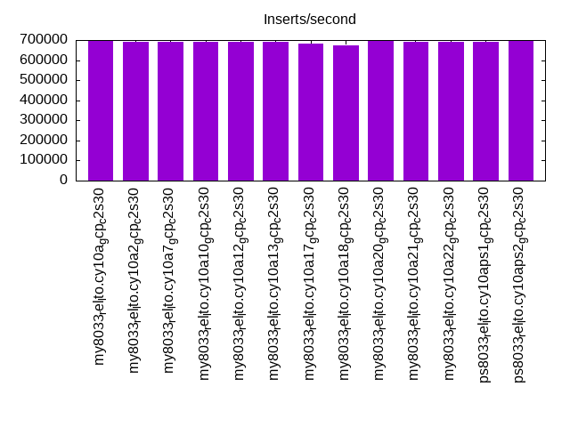

This is a report for the insert benchmark with 4000M docs and 8 client(s). It is generated by scripts (bash, awk, sed) and Tufte might not be impressed. An overview of the insert benchmark is here and a short update is here. Below, by DBMS, I mean DBMS+version.config. An example is my8020.c10b40 where my means MySQL, 8020 is version 8.0.20 and c10b40 is the name for the configuration file.
The test server is a c2-standard-30 from GCP with 15 cores, hyperthreads disabled, 120G RAM, XFS + SW RAID 0 on 4 NVMe devices (1.5TB). The benchmark was run with 8 client and there were 1 or 3 connections per client (1 for queries or inserts without rate limits, 1+1 for rate limited inserts+deletes). There are 8 tables, client per table. It loads 500M rows without secondary indexes, creates secondary indexes, then inserts 50M rows with a delete per insert to avoid growing the table. It then does 3 read+write tests for 7200s each that do queries as fast as possible with 100, 500 and then 1000 inserts/second/client concurrent with the queries and 1000 deletes/second to avoid growing the table. The database is larger than memory.
The tested DBMS are:
The numbers are inserts/s for l.i0 and l.i1, indexed docs (or rows) /s for l.x and queries/s for q*.2. The values are the average rate over the entire test for inserts (IPS) and queries (QPS). The range of values for IPS and QPS is split into 3 parts: bottom 25%, middle 50%, top 25%. Values in the bottom 25% have a red background, values in the top 25% have a green background and values in the middle have no color. A gray background is used for values that can be ignored because the DBMS did not sustain the target insert rate. Red backgrounds are not used when the minimum value is within 80% of the max value.
| dbms | l.i0 | l.x | l.i1 | q100.1 | q500.1 | q1000.1 |
|---|---|---|---|---|---|---|
| my8033_rel_lto.cy10a_gcp_c2s30 | 695531 | 629838 | 23567 | 4894 | 4763 | 4154 |
| my8033_rel_lto.cy10a2_gcp_c2s30 | 689299 | 574479 | 22788 | 4886 | 4811 | 4209 |
| my8033_rel_lto.cy10a7_gcp_c2s30 | 691922 | 546089 | 25323 | 4982 | 4832 | 4202 |
| my8033_rel_lto.cy10a10_gcp_c2s30 | 691443 | 625994 | 21483 | 4024 | 3877 | 3450 |
| my8033_rel_lto.cy10a12_gcp_c2s30 | 689180 | 634131 | 22283 | 4902 | 4748 | 4017 |
| my8033_rel_lto.cy10a13_gcp_c2s30 | 692042 | 628749 | 6184 | 6387 | 3995 | 2858 |
| my8033_rel_lto.cy10a17_gcp_c2s30 | 680735 | 654895 | 29573 | 4829 | 4832 | 4487 |
| my8033_rel_lto.cy10a18_gcp_c2s30 | 672156 | 604701 | 23798 | 4810 | 4646 | 3986 |
| my8033_rel_lto.cy10a20_gcp_c2s30 | 694565 | 574562 | 5472 | 5618 | 3866 | 2825 |
| my8033_rel_lto.cy10a21_gcp_c2s30 | 689655 | 576383 | 5439 | 4320 | 3816 | 2554 |
| my8033_rel_lto.cy10a22_gcp_c2s30 | 690250 | 633328 | 6601 | 5609 | 4480 | 2938 |
| ps8033_rel_lto.cy10aps1_gcp_c2s30 | 691563 | 573656 | 26679 | 4748 | 4773 | 4341 |
| ps8033_rel_lto.cy10aps2_gcp_c2s30 | 698080 | 585495 | 26938 | 4767 | 4762 | 4326 |
This table has relative throughput, throughput for the DBMS relative to the DBMS in the first line, using the absolute throughput from the previous table. Values less than 0.95 have a yellow background. Values greater than 1.05 have a blue background.
| dbms | l.i0 | l.x | l.i1 | q100.1 | q500.1 | q1000.1 |
|---|---|---|---|---|---|---|
| my8033_rel_lto.cy10a_gcp_c2s30 | 1.00 | 1.00 | 1.00 | 1.00 | 1.00 | 1.00 |
| my8033_rel_lto.cy10a2_gcp_c2s30 | 0.99 | 0.91 | 0.97 | 1.00 | 1.01 | 1.01 |
| my8033_rel_lto.cy10a7_gcp_c2s30 | 0.99 | 0.87 | 1.07 | 1.02 | 1.01 | 1.01 |
| my8033_rel_lto.cy10a10_gcp_c2s30 | 0.99 | 0.99 | 0.91 | 0.82 | 0.81 | 0.83 |
| my8033_rel_lto.cy10a12_gcp_c2s30 | 0.99 | 1.01 | 0.95 | 1.00 | 1.00 | 0.97 |
| my8033_rel_lto.cy10a13_gcp_c2s30 | 0.99 | 1.00 | 0.26 | 1.31 | 0.84 | 0.69 |
| my8033_rel_lto.cy10a17_gcp_c2s30 | 0.98 | 1.04 | 1.25 | 0.99 | 1.01 | 1.08 |
| my8033_rel_lto.cy10a18_gcp_c2s30 | 0.97 | 0.96 | 1.01 | 0.98 | 0.98 | 0.96 |
| my8033_rel_lto.cy10a20_gcp_c2s30 | 1.00 | 0.91 | 0.23 | 1.15 | 0.81 | 0.68 |
| my8033_rel_lto.cy10a21_gcp_c2s30 | 0.99 | 0.92 | 0.23 | 0.88 | 0.80 | 0.61 |
| my8033_rel_lto.cy10a22_gcp_c2s30 | 0.99 | 1.01 | 0.28 | 1.15 | 0.94 | 0.71 |
| ps8033_rel_lto.cy10aps1_gcp_c2s30 | 0.99 | 0.91 | 1.13 | 0.97 | 1.00 | 1.05 |
| ps8033_rel_lto.cy10aps2_gcp_c2s30 | 1.00 | 0.93 | 1.14 | 0.97 | 1.00 | 1.04 |
This lists the average rate of inserts/s for the tests that do inserts concurrent with queries. For such tests the query rate is listed in the table above. The read+write tests are setup so that the insert rate should match the target rate every second. Cells that are not at least 95% of the target have a red background to indicate a failure to satisfy the target.
| dbms | q100.1 | q500.1 | q1000.1 |
|---|---|---|---|
| my8033_rel_lto.cy10a_gcp_c2s30 | 790 | 3978 | 7952 |
| my8033_rel_lto.cy10a2_gcp_c2s30 | 791 | 3978 | 7952 |
| my8033_rel_lto.cy10a7_gcp_c2s30 | 790 | 3978 | 7952 |
| my8033_rel_lto.cy10a10_gcp_c2s30 | 792 | 3979 | 7962 |
| my8033_rel_lto.cy10a12_gcp_c2s30 | 792 | 3979 | 7954 |
| my8033_rel_lto.cy10a13_gcp_c2s30 | 798 | 3992 | 6013 |
| my8033_rel_lto.cy10a17_gcp_c2s30 | 796 | 3986 | 7972 |
| my8033_rel_lto.cy10a18_gcp_c2s30 | 789 | 3977 | 7951 |
| my8033_rel_lto.cy10a20_gcp_c2s30 | 798 | 3992 | 6261 |
| my8033_rel_lto.cy10a21_gcp_c2s30 | 798 | 3992 | 7987 |
| my8033_rel_lto.cy10a22_gcp_c2s30 | 798 | 3993 | 7227 |
| ps8033_rel_lto.cy10aps1_gcp_c2s30 | 790 | 3977 | 7955 |
| ps8033_rel_lto.cy10aps2_gcp_c2s30 | 790 | 3980 | 7958 |
| target | 800 | 4000 | 8000 |
l.i0: load without secondary indexes. Graphs for performance per 1-second interval are here.
Average throughput:
Insert response time histogram: each cell has the percentage of responses that take <= the time in the header and max is the max response time in seconds. For the max column values in the top 25% of the range have a red background and in the bottom 25% of the range have a green background. The red background is not used when the min value is within 80% of the max value.
| dbms | 256us | 1ms | 4ms | 16ms | 64ms | 256ms | 1s | 4s | 16s | gt | max |
|---|---|---|---|---|---|---|---|---|---|---|---|
| my8033_rel_lto.cy10a_gcp_c2s30 | 3.143 | 96.757 | 0.068 | 0.017 | 0.014 | 0.001 | 0.508 | ||||
| my8033_rel_lto.cy10a2_gcp_c2s30 | 1.966 | 97.933 | 0.071 | 0.015 | 0.014 | 0.001 | 0.309 | ||||
| my8033_rel_lto.cy10a7_gcp_c2s30 | 1.803 | 98.096 | 0.069 | 0.018 | 0.014 | 0.001 | 0.299 | ||||
| my8033_rel_lto.cy10a10_gcp_c2s30 | 1.605 | 98.280 | 0.084 | 0.016 | 0.014 | 0.001 | 0.602 | ||||
| my8033_rel_lto.cy10a12_gcp_c2s30 | 1.722 | 98.166 | 0.074 | 0.023 | 0.014 | 0.001 | 0.300 | ||||
| my8033_rel_lto.cy10a13_gcp_c2s30 | 2.488 | 97.415 | 0.069 | 0.013 | 0.014 | 0.001 | 0.302 | ||||
| my8033_rel_lto.cy10a17_gcp_c2s30 | 0.404 | 99.483 | 0.082 | 0.016 | 0.014 | nonzero | 0.955 | ||||
| my8033_rel_lto.cy10a18_gcp_c2s30 | 0.285 | 99.601 | 0.080 | 0.019 | 0.014 | 0.001 | 0.347 | ||||
| my8033_rel_lto.cy10a20_gcp_c2s30 | 2.763 | 97.138 | 0.072 | 0.013 | 0.014 | 0.001 | 0.304 | ||||
| my8033_rel_lto.cy10a21_gcp_c2s30 | 1.708 | 98.192 | 0.066 | 0.020 | 0.014 | 0.001 | 0.304 | ||||
| my8033_rel_lto.cy10a22_gcp_c2s30 | 1.681 | 98.203 | 0.083 | 0.018 | 0.014 | 0.001 | 0.305 | ||||
| ps8033_rel_lto.cy10aps1_gcp_c2s30 | 2.456 | 97.446 | 0.065 | 0.020 | 0.013 | 0.001 | 0.316 | ||||
| ps8033_rel_lto.cy10aps2_gcp_c2s30 | 5.084 | 94.818 | 0.067 | 0.016 | 0.014 | nonzero | 0.301 |
Performance metrics for the DBMS listed above. Some are normalized by throughput, others are not. Legend for results is here.
ips qps rps rmbps wps wmbps rpq rkbpq wpi wkbpi csps cpups cspq cpupq dbgb1 dbgb2 rss maxop p50 p99 tag 695531 0 0 0.0 3649.7 199.6 0.000 0.000 0.005 0.294 226248 77.1 0.325 17 262.1 390.7 86.9 0.508 89403 68925 4000m.my8033_rel_lto.cy10a_gcp_c2s30 689299 0 0 0.0 3657.9 198.7 0.000 0.000 0.005 0.295 219446 77.1 0.318 17 262.1 390.7 86.9 0.309 88535 67926 4000m.my8033_rel_lto.cy10a2_gcp_c2s30 691922 0 0 0.0 3626.9 198.5 0.000 0.000 0.005 0.294 211407 77.1 0.306 17 262.1 390.7 86.7 0.299 88304 68126 4000m.my8033_rel_lto.cy10a7_gcp_c2s30 691443 0 0 0.0 3624.7 198.2 0.000 0.000 0.005 0.294 212701 77.1 0.308 17 262.1 390.7 86.9 0.602 88435 67191 4000m.my8033_rel_lto.cy10a10_gcp_c2s30 689180 0 0 0.0 3735.2 201.7 0.000 0.000 0.005 0.300 211576 77.0 0.307 17 262.1 294.7 86.9 0.300 88633 67626 4000m.my8033_rel_lto.cy10a12_gcp_c2s30 692042 0 0 0.0 3631.3 198.6 0.000 0.000 0.005 0.294 217255 77.0 0.314 17 262.1 390.7 86.9 0.302 89104 67924 4000m.my8033_rel_lto.cy10a13_gcp_c2s30 680735 0 0 0.0 3220.7 152.0 0.000 0.000 0.005 0.229 179211 77.1 0.263 17 262.1 390.7 86.8 0.955 87105 67769 4000m.my8033_rel_lto.cy10a17_gcp_c2s30 672156 0 0 0.0 3531.5 193.1 0.000 0.000 0.005 0.294 172338 77.0 0.256 17 262.1 390.7 86.9 0.347 86007 66052 4000m.my8033_rel_lto.cy10a18_gcp_c2s30 694565 0 0 0.0 3644.3 199.2 0.000 0.000 0.005 0.294 229030 77.1 0.330 17 262.1 390.7 86.9 0.304 89202 68653 4000m.my8033_rel_lto.cy10a20_gcp_c2s30 689655 0 0 0.0 3617.8 197.9 0.000 0.000 0.005 0.294 219310 77.1 0.318 17 262.1 390.7 86.9 0.304 88505 67427 4000m.my8033_rel_lto.cy10a21_gcp_c2s30 690250 0 0 0.0 3617.5 198.0 0.000 0.000 0.005 0.294 222213 77.1 0.322 17 262.1 390.7 86.9 0.305 88203 66927 4000m.my8033_rel_lto.cy10a22_gcp_c2s30 691563 0 0 0.0 3519.0 195.6 0.000 0.000 0.005 0.290 218170 77.0 0.315 17 262.1 390.7 86.9 0.316 88803 67327 4000m.ps8033_rel_lto.cy10aps1_gcp_c2s30 698080 0 0 0.0 3551.5 194.5 0.000 0.000 0.005 0.285 231541 77.2 0.332 17 262.1 390.7 86.9 0.301 89402 69158 4000m.ps8033_rel_lto.cy10aps2_gcp_c2s30
l.x: create secondary indexes.
Average throughput:
Performance metrics for the DBMS listed above. Some are normalized by throughput, others are not. Legend for results is here.
ips qps rps rmbps wps wmbps rpq rkbpq wpi wkbpi csps cpups cspq cpupq dbgb1 dbgb2 rss maxop p50 p99 tag 629838 0 7938 691.9 13394.9 803.7 0.013 1.125 0.021 1.307 52484 56.4 0.083 13 586.1 714.7 87.0 0.004 NA NA 4000m.my8033_rel_lto.cy10a_gcp_c2s30 574479 0 7294 616.3 12007.1 736.2 0.013 1.098 0.021 1.312 50552 57.1 0.088 15 586.1 714.7 87.0 0.003 NA NA 4000m.my8033_rel_lto.cy10a2_gcp_c2s30 546089 0 6848 585.5 11567.8 700.3 0.013 1.098 0.021 1.313 55252 56.2 0.101 15 586.1 714.7 87.0 0.004 NA NA 4000m.my8033_rel_lto.cy10a7_gcp_c2s30 625994 0 7766 675.3 12888.4 801.1 0.012 1.105 0.021 1.310 56313 59.3 0.090 14 586.1 714.7 87.0 0.006 NA NA 4000m.my8033_rel_lto.cy10a10_gcp_c2s30 634131 0 7979 695.0 13238.8 803.5 0.013 1.122 0.021 1.298 51550 58.3 0.081 14 586.1 618.7 87.0 0.004 NA NA 4000m.my8033_rel_lto.cy10a12_gcp_c2s30 628749 0 7805 686.6 13376.7 801.9 0.012 1.118 0.021 1.306 53816 56.1 0.086 13 586.1 714.7 87.0 0.004 NA NA 4000m.my8033_rel_lto.cy10a13_gcp_c2s30 654895 0 8291 707.0 11789.0 795.3 0.013 1.105 0.018 1.244 38457 58.3 0.059 13 586.1 714.7 87.0 0.004 NA NA 4000m.my8033_rel_lto.cy10a17_gcp_c2s30 604701 0 7593 659.9 12732.1 768.8 0.013 1.117 0.021 1.302 58813 57.5 0.097 14 586.1 714.7 87.0 0.015 NA NA 4000m.my8033_rel_lto.cy10a18_gcp_c2s30 574562 0 7254 614.0 12079.2 742.3 0.013 1.094 0.021 1.323 53293 58.0 0.093 15 586.1 714.7 87.0 0.006 NA NA 4000m.my8033_rel_lto.cy10a20_gcp_c2s30 576383 0 7258 617.6 12136.0 737.9 0.013 1.097 0.021 1.311 55758 57.0 0.097 15 586.1 714.7 87.0 0.003 NA NA 4000m.my8033_rel_lto.cy10a21_gcp_c2s30 633328 0 7958 692.5 13100.0 806.0 0.013 1.120 0.021 1.303 57429 58.0 0.091 14 586.1 714.7 87.0 0.003 NA NA 4000m.my8033_rel_lto.cy10a22_gcp_c2s30 573656 0 7299 614.9 11745.0 738.9 0.013 1.098 0.020 1.319 50149 59.9 0.087 16 586.1 714.7 87.1 0.004 NA NA 4000m.ps8033_rel_lto.cy10aps1_gcp_c2s30 585495 0 7430 625.0 11861.5 764.5 0.013 1.093 0.020 1.337 50109 61.1 0.086 16 586.1 714.7 87.1 0.014 NA NA 4000m.ps8033_rel_lto.cy10aps2_gcp_c2s30
l.i1: continue load after secondary indexes created. Graphs for performance per 1-second interval are here.
Average throughput:
Insert response time histogram: each cell has the percentage of responses that take <= the time in the header and max is the max response time in seconds. For the max column values in the top 25% of the range have a red background and in the bottom 25% of the range have a green background. The red background is not used when the min value is within 80% of the max value.
| dbms | 256us | 1ms | 4ms | 16ms | 64ms | 256ms | 1s | 4s | 16s | gt | max |
|---|---|---|---|---|---|---|---|---|---|---|---|
| my8033_rel_lto.cy10a_gcp_c2s30 | 0.241 | 70.090 | 26.762 | 2.886 | 0.021 | 0.447 | |||||
| my8033_rel_lto.cy10a2_gcp_c2s30 | 0.194 | 66.112 | 31.051 | 2.639 | 0.005 | 0.482 | |||||
| my8033_rel_lto.cy10a7_gcp_c2s30 | 0.874 | 75.650 | 20.459 | 2.964 | 0.053 | 0.472 | |||||
| my8033_rel_lto.cy10a10_gcp_c2s30 | 1.219 | 70.798 | 23.739 | 4.212 | 0.032 | 0.432 | |||||
| my8033_rel_lto.cy10a12_gcp_c2s30 | 0.128 | 64.778 | 32.228 | 2.851 | 0.015 | 0.438 | |||||
| my8033_rel_lto.cy10a13_gcp_c2s30 | 0.263 | 65.821 | 33.913 | 0.004 | 0.701 | ||||||
| my8033_rel_lto.cy10a17_gcp_c2s30 | 2.384 | 80.639 | 14.879 | 2.008 | 0.090 | 0.620 | |||||
| my8033_rel_lto.cy10a18_gcp_c2s30 | 0.563 | 72.891 | 23.283 | 3.184 | 0.078 | 0.518 | |||||
| my8033_rel_lto.cy10a20_gcp_c2s30 | 0.084 | 42.076 | 57.804 | 0.037 | 0.791 | ||||||
| my8033_rel_lto.cy10a21_gcp_c2s30 | 0.498 | 28.056 | 71.432 | 0.014 | nonzero | 18.493 | |||||
| my8033_rel_lto.cy10a22_gcp_c2s30 | 0.425 | 56.497 | 43.072 | 0.006 | 0.371 | ||||||
| ps8033_rel_lto.cy10aps1_gcp_c2s30 | 1.033 | 81.240 | 15.490 | 1.763 | 0.474 | 0.001 | 2.191 | ||||
| ps8033_rel_lto.cy10aps2_gcp_c2s30 | 1.074 | 80.643 | 15.271 | 2.877 | 0.134 | nonzero | 1.055 |
Delete response time histogram: each cell has the percentage of responses that take <= the time in the header and max is the max response time in seconds. For the max column values in the top 25% of the range have a red background and in the bottom 25% of the range have a green background. The red background is not used when the min value is within 80% of the max value.
| dbms | 256us | 1ms | 4ms | 16ms | 64ms | 256ms | 1s | 4s | 16s | gt | max |
|---|---|---|---|---|---|---|---|---|---|---|---|
| my8033_rel_lto.cy10a_gcp_c2s30 | 4.392 | 77.040 | 18.116 | 0.435 | 0.018 | 0.500 | |||||
| my8033_rel_lto.cy10a2_gcp_c2s30 | 4.388 | 73.493 | 21.828 | 0.287 | 0.004 | 0.476 | |||||
| my8033_rel_lto.cy10a7_gcp_c2s30 | 5.462 | 79.869 | 14.179 | 0.442 | 0.048 | 0.506 | |||||
| my8033_rel_lto.cy10a10_gcp_c2s30 | 6.827 | 82.624 | 9.521 | 1.004 | 0.024 | 0.445 | |||||
| my8033_rel_lto.cy10a12_gcp_c2s30 | 3.979 | 73.465 | 22.141 | 0.402 | 0.013 | 0.430 | |||||
| my8033_rel_lto.cy10a13_gcp_c2s30 | 50.056 | 16.794 | 12.043 | 21.107 | nonzero | 0.302 | |||||
| my8033_rel_lto.cy10a17_gcp_c2s30 | 7.982 | 81.321 | 10.185 | 0.433 | 0.080 | 0.639 | |||||
| my8033_rel_lto.cy10a18_gcp_c2s30 | 4.681 | 78.590 | 16.158 | 0.505 | 0.065 | 0.467 | |||||
| my8033_rel_lto.cy10a20_gcp_c2s30 | 10.227 | 14.539 | 44.550 | 30.684 | nonzero | 0.290 | |||||
| my8033_rel_lto.cy10a21_gcp_c2s30 | 5.071 | 6.996 | 57.862 | 30.071 | nonzero | nonzero | 18.404 | ||||
| my8033_rel_lto.cy10a22_gcp_c2s30 | 12.559 | 21.657 | 45.282 | 20.502 | 0.198 | ||||||
| ps8033_rel_lto.cy10aps1_gcp_c2s30 | 5.892 | 82.229 | 11.302 | 0.440 | 0.136 | 0.001 | 2.168 | ||||
| ps8033_rel_lto.cy10aps2_gcp_c2s30 | 5.925 | 82.594 | 10.933 | 0.439 | 0.108 | nonzero | 1.090 |
Performance metrics for the DBMS listed above. Some are normalized by throughput, others are not. Legend for results is here.
ips qps rps rmbps wps wmbps rpq rkbpq wpi wkbpi csps cpups cspq cpupq dbgb1 dbgb2 rss maxop p50 p99 tag 23567 0 13333 208.3 25956.0 622.3 0.566 9.052 1.101 27.041 198966 61.5 8.443 391 833.4 1023.8 87.0 0.447 3346 300 4000m.my8033_rel_lto.cy10a_gcp_c2s30 22788 0 12984 202.9 27219.4 639.5 0.570 9.116 1.194 28.736 203732 60.3 8.940 397 833.4 1023.4 87.0 0.482 3196 300 4000m.my8033_rel_lto.cy10a2_gcp_c2s30 25323 0 13951 218.0 24748.3 613.1 0.551 8.815 0.977 24.793 195616 61.7 7.725 365 833.4 1024.6 87.0 0.472 3646 300 4000m.my8033_rel_lto.cy10a7_gcp_c2s30 21483 0 19115 298.7 32201.7 822.6 0.890 14.236 1.499 39.210 210929 60.0 9.818 419 828.0 1017.8 87.0 0.432 3344 350 4000m.my8033_rel_lto.cy10a10_gcp_c2s30 22283 0 12824 200.4 26423.0 633.4 0.575 9.208 1.186 29.107 200527 60.5 8.999 407 833.4 928.6 87.0 0.438 3098 300 4000m.my8033_rel_lto.cy10a12_gcp_c2s30 6184 0 22628 353.6 42250.1 835.5 3.659 58.543 6.832 138.348 181919 24.8 29.416 602 714.7 846.9 87.0 0.701 599 250 4000m.my8033_rel_lto.cy10a13_gcp_c2s30 29573 0 15371 240.2 22778.2 408.8 0.520 8.316 0.770 14.157 196325 67.3 6.639 341 834.2 1024.4 86.9 0.620 4095 499 4000m.my8033_rel_lto.cy10a17_gcp_c2s30 23798 0 13049 203.9 26714.8 635.6 0.548 8.773 1.123 27.351 194841 59.1 8.187 373 833.5 1024.2 87.0 0.518 3348 300 4000m.my8033_rel_lto.cy10a18_gcp_c2s30 5472 0 21217 331.5 39046.3 784.4 3.878 62.043 7.136 146.794 184597 24.7 33.737 677 748.8 884.0 87.0 0.791 599 350 4000m.my8033_rel_lto.cy10a20_gcp_c2s30 5439 0 20102 314.1 36882.9 751.0 3.696 59.129 6.781 141.379 180935 24.7 33.264 681 779.9 925.4 87.0 18.493 649 350 4000m.my8033_rel_lto.cy10a21_gcp_c2s30 6601 0 25314 395.5 41622.2 925.7 3.835 61.358 6.306 143.603 213979 31.1 32.417 707 748.7 884.1 87.0 0.371 699 400 4000m.my8033_rel_lto.cy10a22_gcp_c2s30 26679 0 13465 210.4 22260.0 662.2 0.505 8.075 0.834 25.418 197501 63.7 7.403 358 834.4 1024.8 87.0 2.191 3746 250 4000m.ps8033_rel_lto.cy10aps1_gcp_c2s30 26938 0 14039 219.4 23156.4 680.7 0.521 8.339 0.860 25.874 207527 64.0 7.704 356 833.9 1024.1 87.0 1.055 3846 300 4000m.ps8033_rel_lto.cy10aps2_gcp_c2s30
q100.1: range queries with 100 insert/s per client. Graphs for performance per 1-second interval are here.
Average throughput:
Query response time histogram: each cell has the percentage of responses that take <= the time in the header and max is the max response time in seconds. For max values in the top 25% of the range have a red background and in the bottom 25% of the range have a green background. The red background is not used when the min value is within 80% of the max value.
| dbms | 256us | 1ms | 4ms | 16ms | 64ms | 256ms | 1s | 4s | 16s | gt | max |
|---|---|---|---|---|---|---|---|---|---|---|---|
| my8033_rel_lto.cy10a_gcp_c2s30 | 39.742 | 2.947 | 54.991 | 2.293 | 0.027 | 0.001 | 0.222 | ||||
| my8033_rel_lto.cy10a2_gcp_c2s30 | 39.998 | 2.825 | 54.739 | 2.380 | 0.056 | 0.003 | nonzero | 0.680 | |||
| my8033_rel_lto.cy10a7_gcp_c2s30 | 40.077 | 2.582 | 55.576 | 1.737 | 0.027 | 0.001 | 0.216 | ||||
| my8033_rel_lto.cy10a10_gcp_c2s30 | 33.733 | 6.375 | 53.431 | 6.393 | 0.063 | 0.005 | nonzero | 0.367 | |||
| my8033_rel_lto.cy10a12_gcp_c2s30 | 39.699 | 2.919 | 55.101 | 2.252 | 0.028 | 0.001 | 0.243 | ||||
| my8033_rel_lto.cy10a13_gcp_c2s30 | 46.692 | 1.535 | 51.317 | 0.455 | 0.001 | nonzero | 0.081 | ||||
| my8033_rel_lto.cy10a17_gcp_c2s30 | 40.619 | 1.817 | 53.640 | 3.866 | 0.054 | 0.004 | 0.250 | ||||
| my8033_rel_lto.cy10a18_gcp_c2s30 | 40.438 | 2.729 | 54.093 | 2.706 | 0.033 | 0.001 | 0.230 | ||||
| my8033_rel_lto.cy10a20_gcp_c2s30 | 45.000 | 1.901 | 50.290 | 2.805 | 0.005 | nonzero | 0.091 | ||||
| my8033_rel_lto.cy10a21_gcp_c2s30 | 40.042 | 3.243 | 47.144 | 9.553 | 0.017 | nonzero | 0.128 | ||||
| my8033_rel_lto.cy10a22_gcp_c2s30 | 44.443 | 2.421 | 51.026 | 2.106 | 0.003 | 0.039 | |||||
| ps8033_rel_lto.cy10aps1_gcp_c2s30 | 39.746 | 3.012 | 55.933 | 1.278 | 0.018 | 0.013 | nonzero | 0.664 | |||
| ps8033_rel_lto.cy10aps2_gcp_c2s30 | 39.842 | 2.921 | 55.686 | 1.516 | 0.031 | 0.004 | nonzero | 0.282 |
Insert response time histogram: each cell has the percentage of responses that take <= the time in the header and max is the max response time in seconds. For max values in the top 25% of the range have a red background and in the bottom 25% of the range have a green background. The red background is not used when the min value is within 80% of the max value.
| dbms | 256us | 1ms | 4ms | 16ms | 64ms | 256ms | 1s | 4s | 16s | gt | max |
|---|---|---|---|---|---|---|---|---|---|---|---|
| my8033_rel_lto.cy10a_gcp_c2s30 | 59.472 | 39.415 | 0.998 | 0.114 | 0.001 | 0.256 | |||||
| my8033_rel_lto.cy10a2_gcp_c2s30 | 72.456 | 25.793 | 1.545 | 0.194 | 0.013 | 0.416 | |||||
| my8033_rel_lto.cy10a7_gcp_c2s30 | 60.985 | 37.837 | 1.090 | 0.087 | 0.001 | 0.274 | |||||
| my8033_rel_lto.cy10a10_gcp_c2s30 | 17.519 | 80.160 | 1.902 | 0.417 | 0.003 | 0.311 | |||||
| my8033_rel_lto.cy10a12_gcp_c2s30 | 59.287 | 39.385 | 1.215 | 0.111 | 0.001 | 0.259 | |||||
| my8033_rel_lto.cy10a13_gcp_c2s30 | 61.832 | 38.077 | 0.091 | 0.237 | |||||||
| my8033_rel_lto.cy10a17_gcp_c2s30 | 52.664 | 46.497 | 0.674 | 0.164 | 0.222 | ||||||
| my8033_rel_lto.cy10a18_gcp_c2s30 | 56.361 | 42.255 | 1.260 | 0.122 | 0.002 | 0.297 | |||||
| my8033_rel_lto.cy10a20_gcp_c2s30 | 48.948 | 50.687 | 0.361 | 0.004 | 0.374 | ||||||
| my8033_rel_lto.cy10a21_gcp_c2s30 | 15.968 | 83.473 | 0.548 | 0.011 | 0.338 | ||||||
| my8033_rel_lto.cy10a22_gcp_c2s30 | 41.610 | 58.352 | 0.037 | 0.090 | |||||||
| ps8033_rel_lto.cy10aps1_gcp_c2s30 | 56.208 | 42.904 | 0.577 | 0.298 | 0.013 | 0.398 | |||||
| ps8033_rel_lto.cy10aps2_gcp_c2s30 | 59.265 | 39.907 | 0.622 | 0.206 | 0.001 | 0.333 |
Delete response time histogram: each cell has the percentage of responses that take <= the time in the header and max is the max response time in seconds. For max values in the top 25% of the range have a red background and in the bottom 25% of the range have a green background. The red background is not used when the min value is within 80% of the max value.
| dbms | 256us | 1ms | 4ms | 16ms | 64ms | 256ms | 1s | 4s | 16s | gt | max |
|---|---|---|---|---|---|---|---|---|---|---|---|
| my8033_rel_lto.cy10a_gcp_c2s30 | 62.487 | 36.600 | 0.846 | 0.067 | 0.218 | ||||||
| my8033_rel_lto.cy10a2_gcp_c2s30 | 74.255 | 24.303 | 1.314 | 0.118 | 0.010 | 0.416 | |||||
| my8033_rel_lto.cy10a7_gcp_c2s30 | 63.041 | 35.913 | 1.001 | 0.044 | 0.001 | 0.275 | |||||
| my8033_rel_lto.cy10a10_gcp_c2s30 | 51.859 | 46.427 | 1.477 | 0.237 | 0.238 | ||||||
| my8033_rel_lto.cy10a12_gcp_c2s30 | 62.266 | 36.592 | 1.076 | 0.064 | 0.001 | 0.259 | |||||
| my8033_rel_lto.cy10a13_gcp_c2s30 | 98.727 | 1.237 | 0.036 | 0.056 | |||||||
| my8033_rel_lto.cy10a17_gcp_c2s30 | 57.592 | 41.749 | 0.557 | 0.102 | 0.221 | ||||||
| my8033_rel_lto.cy10a18_gcp_c2s30 | 60.062 | 38.671 | 1.196 | 0.070 | 0.207 | ||||||
| my8033_rel_lto.cy10a20_gcp_c2s30 | 91.077 | 6.124 | 2.799 | 0.054 | |||||||
| my8033_rel_lto.cy10a21_gcp_c2s30 | 81.239 | 14.909 | 3.852 | 0.059 | |||||||
| my8033_rel_lto.cy10a22_gcp_c2s30 | 93.602 | 6.359 | 0.039 | 0.032 | |||||||
| ps8033_rel_lto.cy10aps1_gcp_c2s30 | 57.280 | 42.003 | 0.472 | 0.227 | 0.017 | 0.663 | |||||
| ps8033_rel_lto.cy10aps2_gcp_c2s30 | 61.497 | 37.831 | 0.535 | 0.137 | 0.001 | 0.332 |
Performance metrics for the DBMS listed above. Some are normalized by throughput, others are not. Legend for results is here.
ips qps rps rmbps wps wmbps rpq rkbpq wpi wkbpi csps cpups cspq cpupq dbgb1 dbgb2 rss maxop p50 p99 tag 790 4894 35335 552.1 17791.2 450.4 7.220 115.519 22.523 583.824 152165 23.4 31.092 717 833.4 1024.2 87.0 0.222 639 336 4000m.my8033_rel_lto.cy10a_gcp_c2s30 791 4886 35878 560.6 18640.8 474.2 7.344 117.496 23.557 613.657 157049 24.1 32.145 740 833.4 1023.9 87.0 0.680 640 304 4000m.my8033_rel_lto.cy10a2_gcp_c2s30 790 4982 35719 558.1 17469.8 450.9 7.170 114.723 22.122 584.652 153403 23.3 30.794 702 833.4 1025.0 87.0 0.216 655 368 4000m.my8033_rel_lto.cy10a7_gcp_c2s30 792 4024 39533 617.7 28424.0 697.5 9.824 157.191 35.902 902.172 190427 28.5 47.324 1062 828.0 1011.3 87.0 0.367 527 320 4000m.my8033_rel_lto.cy10a10_gcp_c2s30 792 4902 35435 553.7 18538.7 476.1 7.228 115.655 23.416 615.733 155275 23.6 31.675 722 833.4 929.0 87.0 0.243 639 320 4000m.my8033_rel_lto.cy10a12_gcp_c2s30 798 6387 32765 511.9 8129.5 213.4 5.130 82.081 10.181 273.613 118323 16.5 18.526 388 714.7 846.9 87.0 0.081 815 416 4000m.my8033_rel_lto.cy10a13_gcp_c2s30 796 4829 34192 534.3 13537.8 213.9 7.081 113.297 17.018 275.397 133052 20.6 27.554 640 834.2 1024.9 87.0 0.250 623 416 4000m.my8033_rel_lto.cy10a17_gcp_c2s30 789 4810 34412 537.7 18396.0 434.2 7.154 114.461 23.310 563.423 149224 22.8 31.022 711 833.5 1024.6 87.0 0.230 623 352 4000m.my8033_rel_lto.cy10a18_gcp_c2s30 798 5618 33071 516.7 14225.2 323.2 5.887 94.185 17.819 414.584 135458 18.3 24.112 489 748.8 884.0 87.0 0.091 783 304 4000m.my8033_rel_lto.cy10a20_gcp_c2s30 798 4320 35241 550.6 26976.2 558.7 8.158 130.524 33.805 716.926 169520 21.5 39.241 747 779.9 923.6 87.0 0.128 463 288 4000m.my8033_rel_lto.cy10a21_gcp_c2s30 798 5609 32774 512.1 12510.2 314.5 5.844 93.497 15.669 403.358 135086 18.6 24.086 497 748.7 884.1 87.0 0.039 751 368 4000m.my8033_rel_lto.cy10a22_gcp_c2s30 790 4748 33518 523.7 14707.2 410.1 7.059 112.947 18.628 531.929 142904 22.3 30.096 704 834.4 1025.2 87.0 0.664 608 368 4000m.ps8033_rel_lto.cy10aps1_gcp_c2s30 790 4767 33664 526.0 14808.2 412.6 7.062 112.994 18.737 534.622 143889 22.3 30.186 702 833.9 1024.5 87.0 0.282 623 352 4000m.ps8033_rel_lto.cy10aps2_gcp_c2s30
q500.1: range queries with 500 insert/s per client. Graphs for performance per 1-second interval are here.
Average throughput:
Query response time histogram: each cell has the percentage of responses that take <= the time in the header and max is the max response time in seconds. For max values in the top 25% of the range have a red background and in the bottom 25% of the range have a green background. The red background is not used when the min value is within 80% of the max value.
| dbms | 256us | 1ms | 4ms | 16ms | 64ms | 256ms | 1s | 4s | 16s | gt | max |
|---|---|---|---|---|---|---|---|---|---|---|---|
| my8033_rel_lto.cy10a_gcp_c2s30 | 39.497 | 3.146 | 54.046 | 3.309 | 0.001 | nonzero | 0.191 | ||||
| my8033_rel_lto.cy10a2_gcp_c2s30 | 39.984 | 2.964 | 53.865 | 3.186 | nonzero | nonzero | 0.192 | ||||
| my8033_rel_lto.cy10a7_gcp_c2s30 | 39.595 | 3.022 | 54.636 | 2.742 | 0.006 | nonzero | nonzero | 0.523 | |||
| my8033_rel_lto.cy10a10_gcp_c2s30 | 31.922 | 8.027 | 50.648 | 9.402 | 0.001 | nonzero | 0.174 | ||||
| my8033_rel_lto.cy10a12_gcp_c2s30 | 39.370 | 3.200 | 54.162 | 3.266 | 0.001 | nonzero | 0.204 | ||||
| my8033_rel_lto.cy10a13_gcp_c2s30 | 37.091 | 3.792 | 48.331 | 10.759 | 0.026 | nonzero | 0.122 | ||||
| my8033_rel_lto.cy10a17_gcp_c2s30 | 40.162 | 2.167 | 53.630 | 3.985 | 0.055 | nonzero | 0.169 | ||||
| my8033_rel_lto.cy10a18_gcp_c2s30 | 40.325 | 2.742 | 53.260 | 3.671 | 0.002 | nonzero | 0.198 | ||||
| my8033_rel_lto.cy10a20_gcp_c2s30 | 36.286 | 4.346 | 47.138 | 12.204 | 0.026 | nonzero | 0.113 | ||||
| my8033_rel_lto.cy10a21_gcp_c2s30 | 37.393 | 3.141 | 46.519 | 12.934 | 0.013 | 0.042 | |||||
| my8033_rel_lto.cy10a22_gcp_c2s30 | 35.486 | 5.849 | 53.230 | 5.423 | 0.013 | nonzero | 0.084 | ||||
| ps8033_rel_lto.cy10aps1_gcp_c2s30 | 39.174 | 3.488 | 56.299 | 1.027 | 0.002 | 0.011 | nonzero | 0.299 | |||
| ps8033_rel_lto.cy10aps2_gcp_c2s30 | 38.998 | 3.628 | 56.176 | 1.185 | 0.013 | 0.001 | nonzero | 0.442 |
Insert response time histogram: each cell has the percentage of responses that take <= the time in the header and max is the max response time in seconds. For max values in the top 25% of the range have a red background and in the bottom 25% of the range have a green background. The red background is not used when the min value is within 80% of the max value.
| dbms | 256us | 1ms | 4ms | 16ms | 64ms | 256ms | 1s | 4s | 16s | gt | max |
|---|---|---|---|---|---|---|---|---|---|---|---|
| my8033_rel_lto.cy10a_gcp_c2s30 | 79.221 | 20.676 | 0.103 | 0.045 | |||||||
| my8033_rel_lto.cy10a2_gcp_c2s30 | 87.625 | 12.368 | 0.007 | 0.031 | |||||||
| my8033_rel_lto.cy10a7_gcp_c2s30 | 81.337 | 18.517 | 0.139 | 0.006 | nonzero | 0.313 | |||||
| my8033_rel_lto.cy10a10_gcp_c2s30 | 38.890 | 60.990 | 0.120 | 0.044 | |||||||
| my8033_rel_lto.cy10a12_gcp_c2s30 | 77.724 | 22.161 | 0.115 | 0.056 | |||||||
| my8033_rel_lto.cy10a13_gcp_c2s30 | 10.446 | 89.270 | 0.282 | 0.002 | 0.303 | ||||||
| my8033_rel_lto.cy10a17_gcp_c2s30 | 79.827 | 20.071 | 0.103 | 0.037 | |||||||
| my8033_rel_lto.cy10a18_gcp_c2s30 | 76.556 | 23.248 | 0.196 | 0.057 | |||||||
| my8033_rel_lto.cy10a20_gcp_c2s30 | 6.894 | 92.869 | 0.236 | 0.001 | 0.327 | ||||||
| my8033_rel_lto.cy10a21_gcp_c2s30 | 8.540 | 91.449 | 0.011 | 0.076 | |||||||
| my8033_rel_lto.cy10a22_gcp_c2s30 | 26.046 | 73.838 | 0.117 | 0.203 | |||||||
| ps8033_rel_lto.cy10aps1_gcp_c2s30 | 81.485 | 18.414 | 0.079 | 0.022 | nonzero | 0.299 | |||||
| ps8033_rel_lto.cy10aps2_gcp_c2s30 | 79.261 | 20.600 | 0.133 | 0.006 | 0.236 |
Delete response time histogram: each cell has the percentage of responses that take <= the time in the header and max is the max response time in seconds. For max values in the top 25% of the range have a red background and in the bottom 25% of the range have a green background. The red background is not used when the min value is within 80% of the max value.
| dbms | 256us | 1ms | 4ms | 16ms | 64ms | 256ms | 1s | 4s | 16s | gt | max |
|---|---|---|---|---|---|---|---|---|---|---|---|
| my8033_rel_lto.cy10a_gcp_c2s30 | 86.604 | 13.302 | 0.094 | 0.045 | |||||||
| my8033_rel_lto.cy10a2_gcp_c2s30 | 91.800 | 8.175 | 0.025 | 0.028 | |||||||
| my8033_rel_lto.cy10a7_gcp_c2s30 | 87.826 | 12.032 | 0.135 | 0.007 | 0.246 | ||||||
| my8033_rel_lto.cy10a10_gcp_c2s30 | 70.883 | 29.006 | 0.111 | 0.050 | |||||||
| my8033_rel_lto.cy10a12_gcp_c2s30 | 85.407 | 14.484 | 0.109 | 0.050 | |||||||
| my8033_rel_lto.cy10a13_gcp_c2s30 | 91.844 | 8.063 | 0.091 | 0.002 | 0.078 | ||||||
| my8033_rel_lto.cy10a17_gcp_c2s30 | 86.522 | 13.400 | 0.078 | 0.053 | |||||||
| my8033_rel_lto.cy10a18_gcp_c2s30 | 84.122 | 15.686 | 0.193 | 0.057 | |||||||
| my8033_rel_lto.cy10a20_gcp_c2s30 | 83.390 | 16.532 | 0.076 | 0.002 | 0.097 | ||||||
| my8033_rel_lto.cy10a21_gcp_c2s30 | 83.976 | 15.996 | 0.028 | 0.033 | |||||||
| my8033_rel_lto.cy10a22_gcp_c2s30 | 84.504 | 15.473 | 0.023 | nonzero | 0.065 | ||||||
| ps8033_rel_lto.cy10aps1_gcp_c2s30 | 87.345 | 12.569 | 0.063 | 0.023 | 0.170 | ||||||
| ps8033_rel_lto.cy10aps2_gcp_c2s30 | 85.640 | 14.237 | 0.117 | 0.006 | 0.161 |
Performance metrics for the DBMS listed above. Some are normalized by throughput, others are not. Legend for results is here.
ips qps rps rmbps wps wmbps rpq rkbpq wpi wkbpi csps cpups cspq cpupq dbgb1 dbgb2 rss maxop p50 p99 tag 3978 4763 33711 526.7 20020.7 483.9 7.078 113.244 5.033 124.578 153328 25.0 32.192 787 833.4 1026.4 87.0 0.191 591 527 4000m.my8033_rel_lto.cy10a_gcp_c2s30 3978 4811 34448 538.3 21052.2 509.9 7.160 114.568 5.292 131.250 157258 24.5 32.688 764 833.4 1026.1 87.0 0.192 607 543 4000m.my8033_rel_lto.cy10a2_gcp_c2s30 3978 4832 34034 531.8 19606.3 484.3 7.044 112.696 4.928 124.643 154401 24.9 31.955 773 833.4 1027.3 87.0 0.523 607 527 4000m.my8033_rel_lto.cy10a7_gcp_c2s30 3979 3877 38419 600.3 31625.8 740.7 9.909 158.542 7.948 190.637 196524 30.1 50.687 1165 828.0 1013.5 87.0 0.174 495 432 4000m.my8033_rel_lto.cy10a10_gcp_c2s30 3979 4748 33666 526.0 21497.3 522.0 7.090 113.446 5.403 134.342 157554 25.3 33.183 799 833.4 931.3 87.0 0.204 591 527 4000m.my8033_rel_lto.cy10a12_gcp_c2s30 3992 3995 37280 582.5 31949.3 654.9 9.331 149.303 8.003 167.988 192823 25.8 48.265 969 714.7 846.9 87.0 0.122 496 368 4000m.my8033_rel_lto.cy10a13_gcp_c2s30 3986 4832 33540 524.1 15037.6 239.5 6.941 111.049 3.773 61.515 136579 23.0 28.263 714 834.2 1027.1 87.0 0.169 607 543 4000m.my8033_rel_lto.cy10a17_gcp_c2s30 3977 4646 32400 506.2 20145.6 459.2 6.974 111.590 5.066 118.236 148661 24.0 32.001 775 833.5 1026.9 87.0 0.198 576 511 4000m.my8033_rel_lto.cy10a18_gcp_c2s30 3992 3866 36868 576.1 32251.1 657.6 9.536 152.576 8.080 168.700 184744 25.7 47.784 997 748.8 884.0 86.9 0.113 480 384 4000m.my8033_rel_lto.cy10a20_gcp_c2s30 3992 3816 36883 576.3 32566.3 667.4 9.664 154.624 8.157 171.189 184799 25.5 48.421 1002 779.9 923.6 86.9 0.042 479 416 4000m.my8033_rel_lto.cy10a21_gcp_c2s30 3993 4480 39909 623.6 28301.3 673.7 8.909 142.537 7.088 172.789 190246 28.2 42.468 944 748.7 884.1 86.9 0.084 560 448 4000m.my8033_rel_lto.cy10a22_gcp_c2s30 3977 4773 32987 515.4 16142.0 451.9 6.911 110.570 4.059 116.359 147570 24.6 30.915 773 834.4 1027.5 87.0 0.299 607 511 4000m.ps8033_rel_lto.cy10aps1_gcp_c2s30 3980 4762 32968 515.1 16184.7 452.7 6.924 110.781 4.067 116.495 147856 24.6 31.052 775 833.9 1026.7 87.0 0.442 592 543 4000m.ps8033_rel_lto.cy10aps2_gcp_c2s30
q1000.1: range queries with 1000 insert/s per client. Graphs for performance per 1-second interval are here.
Average throughput:
Query response time histogram: each cell has the percentage of responses that take <= the time in the header and max is the max response time in seconds. For max values in the top 25% of the range have a red background and in the bottom 25% of the range have a green background. The red background is not used when the min value is within 80% of the max value.
| dbms | 256us | 1ms | 4ms | 16ms | 64ms | 256ms | 1s | 4s | 16s | gt | max |
|---|---|---|---|---|---|---|---|---|---|---|---|
| my8033_rel_lto.cy10a_gcp_c2s30 | 36.466 | 4.759 | 50.820 | 7.928 | 0.026 | 0.001 | 0.219 | ||||
| my8033_rel_lto.cy10a2_gcp_c2s30 | 36.453 | 4.995 | 50.879 | 7.665 | 0.006 | 0.001 | 0.222 | ||||
| my8033_rel_lto.cy10a7_gcp_c2s30 | 36.422 | 4.808 | 51.392 | 7.357 | 0.021 | 0.001 | nonzero | 0.723 | |||
| my8033_rel_lto.cy10a10_gcp_c2s30 | 28.625 | 10.421 | 44.761 | 16.175 | 0.017 | 0.001 | 0.225 | ||||
| my8033_rel_lto.cy10a12_gcp_c2s30 | 36.416 | 4.761 | 49.266 | 9.517 | 0.038 | 0.001 | 0.225 | ||||
| my8033_rel_lto.cy10a13_gcp_c2s30 | 29.963 | 8.093 | 32.931 | 28.945 | 0.068 | 0.050 | |||||
| my8033_rel_lto.cy10a17_gcp_c2s30 | 38.155 | 2.998 | 53.561 | 5.114 | 0.171 | 0.001 | 0.192 | ||||
| my8033_rel_lto.cy10a18_gcp_c2s30 | 36.570 | 4.781 | 49.490 | 9.111 | 0.048 | 0.001 | nonzero | 0.447 | |||
| my8033_rel_lto.cy10a20_gcp_c2s30 | 29.751 | 8.001 | 33.051 | 29.080 | 0.117 | nonzero | 0.116 | ||||
| my8033_rel_lto.cy10a21_gcp_c2s30 | 29.135 | 8.012 | 26.857 | 35.858 | 0.138 | nonzero | 0.069 | ||||
| my8033_rel_lto.cy10a22_gcp_c2s30 | 24.878 | 12.643 | 36.335 | 25.999 | 0.145 | nonzero | 0.111 | ||||
| ps8033_rel_lto.cy10aps1_gcp_c2s30 | 35.596 | 5.701 | 55.968 | 2.658 | 0.059 | 0.019 | nonzero | 0.320 | |||
| ps8033_rel_lto.cy10aps2_gcp_c2s30 | 35.838 | 5.442 | 55.356 | 3.277 | 0.084 | 0.003 | nonzero | 0.482 |
Insert response time histogram: each cell has the percentage of responses that take <= the time in the header and max is the max response time in seconds. For max values in the top 25% of the range have a red background and in the bottom 25% of the range have a green background. The red background is not used when the min value is within 80% of the max value.
| dbms | 256us | 1ms | 4ms | 16ms | 64ms | 256ms | 1s | 4s | 16s | gt | max |
|---|---|---|---|---|---|---|---|---|---|---|---|
| my8033_rel_lto.cy10a_gcp_c2s30 | 53.437 | 45.783 | 0.772 | 0.007 | 0.113 | ||||||
| my8033_rel_lto.cy10a2_gcp_c2s30 | 52.733 | 46.426 | 0.840 | 0.001 | 0.099 | ||||||
| my8033_rel_lto.cy10a7_gcp_c2s30 | 50.386 | 48.635 | 0.966 | 0.013 | nonzero | 0.267 | |||||
| my8033_rel_lto.cy10a10_gcp_c2s30 | 12.149 | 86.416 | 1.435 | 0.058 | |||||||
| my8033_rel_lto.cy10a12_gcp_c2s30 | 48.762 | 50.481 | 0.742 | 0.015 | 0.112 | ||||||
| my8033_rel_lto.cy10a13_gcp_c2s30 | 0.708 | 73.746 | 25.547 | 0.207 | |||||||
| my8033_rel_lto.cy10a17_gcp_c2s30 | 68.736 | 30.811 | 0.446 | 0.008 | 0.088 | ||||||
| my8033_rel_lto.cy10a18_gcp_c2s30 | 51.238 | 47.173 | 1.564 | 0.024 | 0.203 | ||||||
| my8033_rel_lto.cy10a20_gcp_c2s30 | 0.803 | 66.200 | 32.995 | 0.003 | 0.334 | ||||||
| my8033_rel_lto.cy10a21_gcp_c2s30 | 1.333 | 98.309 | 0.358 | 0.118 | |||||||
| my8033_rel_lto.cy10a22_gcp_c2s30 | 1.841 | 82.643 | 15.516 | nonzero | 0.263 | ||||||
| ps8033_rel_lto.cy10aps1_gcp_c2s30 | 64.237 | 35.328 | 0.368 | 0.067 | 0.237 | ||||||
| ps8033_rel_lto.cy10aps2_gcp_c2s30 | 69.430 | 30.109 | 0.439 | 0.022 | nonzero | 0.348 |
Delete response time histogram: each cell has the percentage of responses that take <= the time in the header and max is the max response time in seconds. For max values in the top 25% of the range have a red background and in the bottom 25% of the range have a green background. The red background is not used when the min value is within 80% of the max value.
| dbms | 256us | 1ms | 4ms | 16ms | 64ms | 256ms | 1s | 4s | 16s | gt | max |
|---|---|---|---|---|---|---|---|---|---|---|---|
| my8033_rel_lto.cy10a_gcp_c2s30 | 65.153 | 34.148 | 0.692 | 0.006 | 0.101 | ||||||
| my8033_rel_lto.cy10a2_gcp_c2s30 | 60.695 | 38.496 | 0.808 | 0.001 | 0.099 | ||||||
| my8033_rel_lto.cy10a7_gcp_c2s30 | 60.684 | 38.399 | 0.904 | 0.013 | nonzero | 0.265 | |||||
| my8033_rel_lto.cy10a10_gcp_c2s30 | 33.441 | 65.798 | 0.761 | 0.061 | |||||||
| my8033_rel_lto.cy10a12_gcp_c2s30 | 60.394 | 38.920 | 0.673 | 0.013 | 0.120 | ||||||
| my8033_rel_lto.cy10a13_gcp_c2s30 | 53.617 | 15.461 | 11.852 | 19.070 | 0.166 | ||||||
| my8033_rel_lto.cy10a17_gcp_c2s30 | 78.429 | 21.208 | 0.355 | 0.008 | 0.091 | ||||||
| my8033_rel_lto.cy10a18_gcp_c2s30 | 61.689 | 36.812 | 1.477 | 0.022 | 0.212 | ||||||
| my8033_rel_lto.cy10a20_gcp_c2s30 | 31.002 | 21.964 | 28.498 | 18.535 | 0.156 | ||||||
| my8033_rel_lto.cy10a21_gcp_c2s30 | 43.537 | 55.846 | 0.617 | 0.057 | |||||||
| my8033_rel_lto.cy10a22_gcp_c2s30 | 33.919 | 39.615 | 19.433 | 7.033 | 0.124 | ||||||
| ps8033_rel_lto.cy10aps1_gcp_c2s30 | 74.038 | 25.602 | 0.295 | 0.065 | 0.242 | ||||||
| ps8033_rel_lto.cy10aps2_gcp_c2s30 | 78.736 | 20.867 | 0.378 | 0.019 | 0.210 |
Performance metrics for the DBMS listed above. Some are normalized by throughput, others are not. Legend for results is here.
ips qps rps rmbps wps wmbps rpq rkbpq wpi wkbpi csps cpups cspq cpupq dbgb1 dbgb2 rss maxop p50 p99 tag 7952 4154 30708 479.8 23364.8 531.5 7.393 118.291 2.938 68.445 158275 31.1 38.106 1123 833.4 1030.9 87.0 0.219 512 448 4000m.my8033_rel_lto.cy10a_gcp_c2s30 7952 4209 31033 484.9 23807.3 547.8 7.373 117.969 2.994 70.541 160851 30.7 38.216 1094 833.4 1030.6 87.0 0.222 528 448 4000m.my8033_rel_lto.cy10a2_gcp_c2s30 7952 4202 30974 484.0 23023.7 531.8 7.372 117.949 2.895 68.474 159325 31.2 37.919 1114 833.4 1031.7 87.0 0.723 527 448 4000m.my8033_rel_lto.cy10a7_gcp_c2s30 7962 3450 34218 534.7 34480.7 792.7 9.917 158.677 4.330 101.943 199601 35.6 57.850 1548 828.0 1018.0 87.0 0.225 432 384 4000m.my8033_rel_lto.cy10a10_gcp_c2s30 7954 4017 29700 464.1 26093.5 584.7 7.394 118.303 3.281 75.279 162020 30.9 40.336 1154 833.4 935.8 87.0 0.225 496 432 4000m.my8033_rel_lto.cy10a12_gcp_c2s30 6013 2858 35060 547.8 43379.0 830.7 12.266 196.258 7.214 141.459 208067 31.1 72.794 1632 714.7 846.9 86.9 0.050 352 304 4000m.my8033_rel_lto.cy10a13_gcp_c2s30 7972 4487 32728 511.4 17675.6 284.4 7.294 116.699 2.217 36.536 146028 29.8 32.543 996 834.2 1031.6 87.0 0.192 560 495 4000m.my8033_rel_lto.cy10a17_gcp_c2s30 7951 3986 29161 455.6 23249.7 507.3 7.316 117.051 2.924 65.332 153812 30.3 38.587 1140 833.5 1031.3 87.0 0.447 496 384 4000m.my8033_rel_lto.cy10a18_gcp_c2s30 6261 2825 34168 533.9 43077.9 825.7 12.094 193.502 6.881 135.050 214714 31.5 76.000 1672 748.8 884.0 86.9 0.116 352 240 4000m.my8033_rel_lto.cy10a20_gcp_c2s30 7987 2554 32612 509.6 44262.9 844.6 12.768 204.286 5.542 108.288 201340 32.0 78.827 1879 779.9 924.7 86.9 0.069 320 256 4000m.my8033_rel_lto.cy10a21_gcp_c2s30 7227 2938 37499 585.9 44971.0 936.5 12.762 204.194 6.223 132.694 230348 36.8 78.395 1879 748.7 884.1 86.9 0.111 368 304 4000m.my8033_rel_lto.cy10a22_gcp_c2s30 7955 4341 31535 492.7 18582.3 523.2 7.264 116.230 2.336 67.351 155618 31.4 35.848 1085 834.4 1031.9 87.0 0.320 544 432 4000m.ps8033_rel_lto.cy10aps1_gcp_c2s30 7958 4326 31539 492.8 18669.9 524.8 7.291 116.650 2.346 67.535 156104 31.0 36.086 1075 833.9 1031.2 87.0 0.482 544 288 4000m.ps8033_rel_lto.cy10aps2_gcp_c2s30
l.i0: load without secondary indexes
Performance metrics for all DBMS, not just the ones listed above. Some are normalized by throughput, others are not. Legend for results is here.
ips qps rps rmbps wps wmbps rpq rkbpq wpi wkbpi csps cpups cspq cpupq dbgb1 dbgb2 rss maxop p50 p99 tag 695531 0 0 0.0 3649.7 199.6 0.000 0.000 0.005 0.294 226248 77.1 0.325 17 262.1 390.7 86.9 0.508 89403 68925 4000m.my8033_rel_lto.cy10a_gcp_c2s30 689299 0 0 0.0 3657.9 198.7 0.000 0.000 0.005 0.295 219446 77.1 0.318 17 262.1 390.7 86.9 0.309 88535 67926 4000m.my8033_rel_lto.cy10a2_gcp_c2s30 691922 0 0 0.0 3626.9 198.5 0.000 0.000 0.005 0.294 211407 77.1 0.306 17 262.1 390.7 86.7 0.299 88304 68126 4000m.my8033_rel_lto.cy10a7_gcp_c2s30 691443 0 0 0.0 3624.7 198.2 0.000 0.000 0.005 0.294 212701 77.1 0.308 17 262.1 390.7 86.9 0.602 88435 67191 4000m.my8033_rel_lto.cy10a10_gcp_c2s30 689180 0 0 0.0 3735.2 201.7 0.000 0.000 0.005 0.300 211576 77.0 0.307 17 262.1 294.7 86.9 0.300 88633 67626 4000m.my8033_rel_lto.cy10a12_gcp_c2s30 692042 0 0 0.0 3631.3 198.6 0.000 0.000 0.005 0.294 217255 77.0 0.314 17 262.1 390.7 86.9 0.302 89104 67924 4000m.my8033_rel_lto.cy10a13_gcp_c2s30 680735 0 0 0.0 3220.7 152.0 0.000 0.000 0.005 0.229 179211 77.1 0.263 17 262.1 390.7 86.8 0.955 87105 67769 4000m.my8033_rel_lto.cy10a17_gcp_c2s30 672156 0 0 0.0 3531.5 193.1 0.000 0.000 0.005 0.294 172338 77.0 0.256 17 262.1 390.7 86.9 0.347 86007 66052 4000m.my8033_rel_lto.cy10a18_gcp_c2s30 694565 0 0 0.0 3644.3 199.2 0.000 0.000 0.005 0.294 229030 77.1 0.330 17 262.1 390.7 86.9 0.304 89202 68653 4000m.my8033_rel_lto.cy10a20_gcp_c2s30 689655 0 0 0.0 3617.8 197.9 0.000 0.000 0.005 0.294 219310 77.1 0.318 17 262.1 390.7 86.9 0.304 88505 67427 4000m.my8033_rel_lto.cy10a21_gcp_c2s30 690250 0 0 0.0 3617.5 198.0 0.000 0.000 0.005 0.294 222213 77.1 0.322 17 262.1 390.7 86.9 0.305 88203 66927 4000m.my8033_rel_lto.cy10a22_gcp_c2s30 691563 0 0 0.0 3519.0 195.6 0.000 0.000 0.005 0.290 218170 77.0 0.315 17 262.1 390.7 86.9 0.316 88803 67327 4000m.ps8033_rel_lto.cy10aps1_gcp_c2s30 698080 0 0 0.0 3551.5 194.5 0.000 0.000 0.005 0.285 231541 77.2 0.332 17 262.1 390.7 86.9 0.301 89402 69158 4000m.ps8033_rel_lto.cy10aps2_gcp_c2s30
l.x: create secondary indexes
Performance metrics for all DBMS, not just the ones listed above. Some are normalized by throughput, others are not. Legend for results is here.
ips qps rps rmbps wps wmbps rpq rkbpq wpi wkbpi csps cpups cspq cpupq dbgb1 dbgb2 rss maxop p50 p99 tag 629838 0 7938 691.9 13394.9 803.7 0.013 1.125 0.021 1.307 52484 56.4 0.083 13 586.1 714.7 87.0 0.004 NA NA 4000m.my8033_rel_lto.cy10a_gcp_c2s30 574479 0 7294 616.3 12007.1 736.2 0.013 1.098 0.021 1.312 50552 57.1 0.088 15 586.1 714.7 87.0 0.003 NA NA 4000m.my8033_rel_lto.cy10a2_gcp_c2s30 546089 0 6848 585.5 11567.8 700.3 0.013 1.098 0.021 1.313 55252 56.2 0.101 15 586.1 714.7 87.0 0.004 NA NA 4000m.my8033_rel_lto.cy10a7_gcp_c2s30 625994 0 7766 675.3 12888.4 801.1 0.012 1.105 0.021 1.310 56313 59.3 0.090 14 586.1 714.7 87.0 0.006 NA NA 4000m.my8033_rel_lto.cy10a10_gcp_c2s30 634131 0 7979 695.0 13238.8 803.5 0.013 1.122 0.021 1.298 51550 58.3 0.081 14 586.1 618.7 87.0 0.004 NA NA 4000m.my8033_rel_lto.cy10a12_gcp_c2s30 628749 0 7805 686.6 13376.7 801.9 0.012 1.118 0.021 1.306 53816 56.1 0.086 13 586.1 714.7 87.0 0.004 NA NA 4000m.my8033_rel_lto.cy10a13_gcp_c2s30 654895 0 8291 707.0 11789.0 795.3 0.013 1.105 0.018 1.244 38457 58.3 0.059 13 586.1 714.7 87.0 0.004 NA NA 4000m.my8033_rel_lto.cy10a17_gcp_c2s30 604701 0 7593 659.9 12732.1 768.8 0.013 1.117 0.021 1.302 58813 57.5 0.097 14 586.1 714.7 87.0 0.015 NA NA 4000m.my8033_rel_lto.cy10a18_gcp_c2s30 574562 0 7254 614.0 12079.2 742.3 0.013 1.094 0.021 1.323 53293 58.0 0.093 15 586.1 714.7 87.0 0.006 NA NA 4000m.my8033_rel_lto.cy10a20_gcp_c2s30 576383 0 7258 617.6 12136.0 737.9 0.013 1.097 0.021 1.311 55758 57.0 0.097 15 586.1 714.7 87.0 0.003 NA NA 4000m.my8033_rel_lto.cy10a21_gcp_c2s30 633328 0 7958 692.5 13100.0 806.0 0.013 1.120 0.021 1.303 57429 58.0 0.091 14 586.1 714.7 87.0 0.003 NA NA 4000m.my8033_rel_lto.cy10a22_gcp_c2s30 573656 0 7299 614.9 11745.0 738.9 0.013 1.098 0.020 1.319 50149 59.9 0.087 16 586.1 714.7 87.1 0.004 NA NA 4000m.ps8033_rel_lto.cy10aps1_gcp_c2s30 585495 0 7430 625.0 11861.5 764.5 0.013 1.093 0.020 1.337 50109 61.1 0.086 16 586.1 714.7 87.1 0.014 NA NA 4000m.ps8033_rel_lto.cy10aps2_gcp_c2s30
l.i1: continue load after secondary indexes created
Performance metrics for all DBMS, not just the ones listed above. Some are normalized by throughput, others are not. Legend for results is here.
ips qps rps rmbps wps wmbps rpq rkbpq wpi wkbpi csps cpups cspq cpupq dbgb1 dbgb2 rss maxop p50 p99 tag 23567 0 13333 208.3 25956.0 622.3 0.566 9.052 1.101 27.041 198966 61.5 8.443 391 833.4 1023.8 87.0 0.447 3346 300 4000m.my8033_rel_lto.cy10a_gcp_c2s30 22788 0 12984 202.9 27219.4 639.5 0.570 9.116 1.194 28.736 203732 60.3 8.940 397 833.4 1023.4 87.0 0.482 3196 300 4000m.my8033_rel_lto.cy10a2_gcp_c2s30 25323 0 13951 218.0 24748.3 613.1 0.551 8.815 0.977 24.793 195616 61.7 7.725 365 833.4 1024.6 87.0 0.472 3646 300 4000m.my8033_rel_lto.cy10a7_gcp_c2s30 21483 0 19115 298.7 32201.7 822.6 0.890 14.236 1.499 39.210 210929 60.0 9.818 419 828.0 1017.8 87.0 0.432 3344 350 4000m.my8033_rel_lto.cy10a10_gcp_c2s30 22283 0 12824 200.4 26423.0 633.4 0.575 9.208 1.186 29.107 200527 60.5 8.999 407 833.4 928.6 87.0 0.438 3098 300 4000m.my8033_rel_lto.cy10a12_gcp_c2s30 6184 0 22628 353.6 42250.1 835.5 3.659 58.543 6.832 138.348 181919 24.8 29.416 602 714.7 846.9 87.0 0.701 599 250 4000m.my8033_rel_lto.cy10a13_gcp_c2s30 29573 0 15371 240.2 22778.2 408.8 0.520 8.316 0.770 14.157 196325 67.3 6.639 341 834.2 1024.4 86.9 0.620 4095 499 4000m.my8033_rel_lto.cy10a17_gcp_c2s30 23798 0 13049 203.9 26714.8 635.6 0.548 8.773 1.123 27.351 194841 59.1 8.187 373 833.5 1024.2 87.0 0.518 3348 300 4000m.my8033_rel_lto.cy10a18_gcp_c2s30 5472 0 21217 331.5 39046.3 784.4 3.878 62.043 7.136 146.794 184597 24.7 33.737 677 748.8 884.0 87.0 0.791 599 350 4000m.my8033_rel_lto.cy10a20_gcp_c2s30 5439 0 20102 314.1 36882.9 751.0 3.696 59.129 6.781 141.379 180935 24.7 33.264 681 779.9 925.4 87.0 18.493 649 350 4000m.my8033_rel_lto.cy10a21_gcp_c2s30 6601 0 25314 395.5 41622.2 925.7 3.835 61.358 6.306 143.603 213979 31.1 32.417 707 748.7 884.1 87.0 0.371 699 400 4000m.my8033_rel_lto.cy10a22_gcp_c2s30 26679 0 13465 210.4 22260.0 662.2 0.505 8.075 0.834 25.418 197501 63.7 7.403 358 834.4 1024.8 87.0 2.191 3746 250 4000m.ps8033_rel_lto.cy10aps1_gcp_c2s30 26938 0 14039 219.4 23156.4 680.7 0.521 8.339 0.860 25.874 207527 64.0 7.704 356 833.9 1024.1 87.0 1.055 3846 300 4000m.ps8033_rel_lto.cy10aps2_gcp_c2s30
q100.1: range queries with 100 insert/s per client
Performance metrics for all DBMS, not just the ones listed above. Some are normalized by throughput, others are not. Legend for results is here.
ips qps rps rmbps wps wmbps rpq rkbpq wpi wkbpi csps cpups cspq cpupq dbgb1 dbgb2 rss maxop p50 p99 tag 790 4894 35335 552.1 17791.2 450.4 7.220 115.519 22.523 583.824 152165 23.4 31.092 717 833.4 1024.2 87.0 0.222 639 336 4000m.my8033_rel_lto.cy10a_gcp_c2s30 791 4886 35878 560.6 18640.8 474.2 7.344 117.496 23.557 613.657 157049 24.1 32.145 740 833.4 1023.9 87.0 0.680 640 304 4000m.my8033_rel_lto.cy10a2_gcp_c2s30 790 4982 35719 558.1 17469.8 450.9 7.170 114.723 22.122 584.652 153403 23.3 30.794 702 833.4 1025.0 87.0 0.216 655 368 4000m.my8033_rel_lto.cy10a7_gcp_c2s30 792 4024 39533 617.7 28424.0 697.5 9.824 157.191 35.902 902.172 190427 28.5 47.324 1062 828.0 1011.3 87.0 0.367 527 320 4000m.my8033_rel_lto.cy10a10_gcp_c2s30 792 4902 35435 553.7 18538.7 476.1 7.228 115.655 23.416 615.733 155275 23.6 31.675 722 833.4 929.0 87.0 0.243 639 320 4000m.my8033_rel_lto.cy10a12_gcp_c2s30 798 6387 32765 511.9 8129.5 213.4 5.130 82.081 10.181 273.613 118323 16.5 18.526 388 714.7 846.9 87.0 0.081 815 416 4000m.my8033_rel_lto.cy10a13_gcp_c2s30 796 4829 34192 534.3 13537.8 213.9 7.081 113.297 17.018 275.397 133052 20.6 27.554 640 834.2 1024.9 87.0 0.250 623 416 4000m.my8033_rel_lto.cy10a17_gcp_c2s30 789 4810 34412 537.7 18396.0 434.2 7.154 114.461 23.310 563.423 149224 22.8 31.022 711 833.5 1024.6 87.0 0.230 623 352 4000m.my8033_rel_lto.cy10a18_gcp_c2s30 798 5618 33071 516.7 14225.2 323.2 5.887 94.185 17.819 414.584 135458 18.3 24.112 489 748.8 884.0 87.0 0.091 783 304 4000m.my8033_rel_lto.cy10a20_gcp_c2s30 798 4320 35241 550.6 26976.2 558.7 8.158 130.524 33.805 716.926 169520 21.5 39.241 747 779.9 923.6 87.0 0.128 463 288 4000m.my8033_rel_lto.cy10a21_gcp_c2s30 798 5609 32774 512.1 12510.2 314.5 5.844 93.497 15.669 403.358 135086 18.6 24.086 497 748.7 884.1 87.0 0.039 751 368 4000m.my8033_rel_lto.cy10a22_gcp_c2s30 790 4748 33518 523.7 14707.2 410.1 7.059 112.947 18.628 531.929 142904 22.3 30.096 704 834.4 1025.2 87.0 0.664 608 368 4000m.ps8033_rel_lto.cy10aps1_gcp_c2s30 790 4767 33664 526.0 14808.2 412.6 7.062 112.994 18.737 534.622 143889 22.3 30.186 702 833.9 1024.5 87.0 0.282 623 352 4000m.ps8033_rel_lto.cy10aps2_gcp_c2s30
q500.1: range queries with 500 insert/s per client
Performance metrics for all DBMS, not just the ones listed above. Some are normalized by throughput, others are not. Legend for results is here.
ips qps rps rmbps wps wmbps rpq rkbpq wpi wkbpi csps cpups cspq cpupq dbgb1 dbgb2 rss maxop p50 p99 tag 3978 4763 33711 526.7 20020.7 483.9 7.078 113.244 5.033 124.578 153328 25.0 32.192 787 833.4 1026.4 87.0 0.191 591 527 4000m.my8033_rel_lto.cy10a_gcp_c2s30 3978 4811 34448 538.3 21052.2 509.9 7.160 114.568 5.292 131.250 157258 24.5 32.688 764 833.4 1026.1 87.0 0.192 607 543 4000m.my8033_rel_lto.cy10a2_gcp_c2s30 3978 4832 34034 531.8 19606.3 484.3 7.044 112.696 4.928 124.643 154401 24.9 31.955 773 833.4 1027.3 87.0 0.523 607 527 4000m.my8033_rel_lto.cy10a7_gcp_c2s30 3979 3877 38419 600.3 31625.8 740.7 9.909 158.542 7.948 190.637 196524 30.1 50.687 1165 828.0 1013.5 87.0 0.174 495 432 4000m.my8033_rel_lto.cy10a10_gcp_c2s30 3979 4748 33666 526.0 21497.3 522.0 7.090 113.446 5.403 134.342 157554 25.3 33.183 799 833.4 931.3 87.0 0.204 591 527 4000m.my8033_rel_lto.cy10a12_gcp_c2s30 3992 3995 37280 582.5 31949.3 654.9 9.331 149.303 8.003 167.988 192823 25.8 48.265 969 714.7 846.9 87.0 0.122 496 368 4000m.my8033_rel_lto.cy10a13_gcp_c2s30 3986 4832 33540 524.1 15037.6 239.5 6.941 111.049 3.773 61.515 136579 23.0 28.263 714 834.2 1027.1 87.0 0.169 607 543 4000m.my8033_rel_lto.cy10a17_gcp_c2s30 3977 4646 32400 506.2 20145.6 459.2 6.974 111.590 5.066 118.236 148661 24.0 32.001 775 833.5 1026.9 87.0 0.198 576 511 4000m.my8033_rel_lto.cy10a18_gcp_c2s30 3992 3866 36868 576.1 32251.1 657.6 9.536 152.576 8.080 168.700 184744 25.7 47.784 997 748.8 884.0 86.9 0.113 480 384 4000m.my8033_rel_lto.cy10a20_gcp_c2s30 3992 3816 36883 576.3 32566.3 667.4 9.664 154.624 8.157 171.189 184799 25.5 48.421 1002 779.9 923.6 86.9 0.042 479 416 4000m.my8033_rel_lto.cy10a21_gcp_c2s30 3993 4480 39909 623.6 28301.3 673.7 8.909 142.537 7.088 172.789 190246 28.2 42.468 944 748.7 884.1 86.9 0.084 560 448 4000m.my8033_rel_lto.cy10a22_gcp_c2s30 3977 4773 32987 515.4 16142.0 451.9 6.911 110.570 4.059 116.359 147570 24.6 30.915 773 834.4 1027.5 87.0 0.299 607 511 4000m.ps8033_rel_lto.cy10aps1_gcp_c2s30 3980 4762 32968 515.1 16184.7 452.7 6.924 110.781 4.067 116.495 147856 24.6 31.052 775 833.9 1026.7 87.0 0.442 592 543 4000m.ps8033_rel_lto.cy10aps2_gcp_c2s30
q1000.1: range queries with 1000 insert/s per client
Performance metrics for all DBMS, not just the ones listed above. Some are normalized by throughput, others are not. Legend for results is here.
ips qps rps rmbps wps wmbps rpq rkbpq wpi wkbpi csps cpups cspq cpupq dbgb1 dbgb2 rss maxop p50 p99 tag 7952 4154 30708 479.8 23364.8 531.5 7.393 118.291 2.938 68.445 158275 31.1 38.106 1123 833.4 1030.9 87.0 0.219 512 448 4000m.my8033_rel_lto.cy10a_gcp_c2s30 7952 4209 31033 484.9 23807.3 547.8 7.373 117.969 2.994 70.541 160851 30.7 38.216 1094 833.4 1030.6 87.0 0.222 528 448 4000m.my8033_rel_lto.cy10a2_gcp_c2s30 7952 4202 30974 484.0 23023.7 531.8 7.372 117.949 2.895 68.474 159325 31.2 37.919 1114 833.4 1031.7 87.0 0.723 527 448 4000m.my8033_rel_lto.cy10a7_gcp_c2s30 7962 3450 34218 534.7 34480.7 792.7 9.917 158.677 4.330 101.943 199601 35.6 57.850 1548 828.0 1018.0 87.0 0.225 432 384 4000m.my8033_rel_lto.cy10a10_gcp_c2s30 7954 4017 29700 464.1 26093.5 584.7 7.394 118.303 3.281 75.279 162020 30.9 40.336 1154 833.4 935.8 87.0 0.225 496 432 4000m.my8033_rel_lto.cy10a12_gcp_c2s30 6013 2858 35060 547.8 43379.0 830.7 12.266 196.258 7.214 141.459 208067 31.1 72.794 1632 714.7 846.9 86.9 0.050 352 304 4000m.my8033_rel_lto.cy10a13_gcp_c2s30 7972 4487 32728 511.4 17675.6 284.4 7.294 116.699 2.217 36.536 146028 29.8 32.543 996 834.2 1031.6 87.0 0.192 560 495 4000m.my8033_rel_lto.cy10a17_gcp_c2s30 7951 3986 29161 455.6 23249.7 507.3 7.316 117.051 2.924 65.332 153812 30.3 38.587 1140 833.5 1031.3 87.0 0.447 496 384 4000m.my8033_rel_lto.cy10a18_gcp_c2s30 6261 2825 34168 533.9 43077.9 825.7 12.094 193.502 6.881 135.050 214714 31.5 76.000 1672 748.8 884.0 86.9 0.116 352 240 4000m.my8033_rel_lto.cy10a20_gcp_c2s30 7987 2554 32612 509.6 44262.9 844.6 12.768 204.286 5.542 108.288 201340 32.0 78.827 1879 779.9 924.7 86.9 0.069 320 256 4000m.my8033_rel_lto.cy10a21_gcp_c2s30 7227 2938 37499 585.9 44971.0 936.5 12.762 204.194 6.223 132.694 230348 36.8 78.395 1879 748.7 884.1 86.9 0.111 368 304 4000m.my8033_rel_lto.cy10a22_gcp_c2s30 7955 4341 31535 492.7 18582.3 523.2 7.264 116.230 2.336 67.351 155618 31.4 35.848 1085 834.4 1031.9 87.0 0.320 544 432 4000m.ps8033_rel_lto.cy10aps1_gcp_c2s30 7958 4326 31539 492.8 18669.9 524.8 7.291 116.650 2.346 67.535 156104 31.0 36.086 1075 833.9 1031.2 87.0 0.482 544 288 4000m.ps8033_rel_lto.cy10aps2_gcp_c2s30
Insert response time histogram
256us 1ms 4ms 16ms 64ms 256ms 1s 4s 16s gt max tag 0.000 3.143 96.757 0.068 0.017 0.014 0.001 0.000 0.000 0.000 0.508 my8033_rel_lto.cy10a_gcp_c2s30 0.000 1.966 97.933 0.071 0.015 0.014 0.001 0.000 0.000 0.000 0.309 my8033_rel_lto.cy10a2_gcp_c2s30 0.000 1.803 98.096 0.069 0.018 0.014 0.001 0.000 0.000 0.000 0.299 my8033_rel_lto.cy10a7_gcp_c2s30 0.000 1.605 98.280 0.084 0.016 0.014 0.001 0.000 0.000 0.000 0.602 my8033_rel_lto.cy10a10_gcp_c2s30 0.000 1.722 98.166 0.074 0.023 0.014 0.001 0.000 0.000 0.000 0.300 my8033_rel_lto.cy10a12_gcp_c2s30 0.000 2.488 97.415 0.069 0.013 0.014 0.001 0.000 0.000 0.000 0.302 my8033_rel_lto.cy10a13_gcp_c2s30 0.000 0.404 99.483 0.082 0.016 0.014 nonzero 0.000 0.000 0.000 0.955 my8033_rel_lto.cy10a17_gcp_c2s30 0.000 0.285 99.601 0.080 0.019 0.014 0.001 0.000 0.000 0.000 0.347 my8033_rel_lto.cy10a18_gcp_c2s30 0.000 2.763 97.138 0.072 0.013 0.014 0.001 0.000 0.000 0.000 0.304 my8033_rel_lto.cy10a20_gcp_c2s30 0.000 1.708 98.192 0.066 0.020 0.014 0.001 0.000 0.000 0.000 0.304 my8033_rel_lto.cy10a21_gcp_c2s30 0.000 1.681 98.203 0.083 0.018 0.014 0.001 0.000 0.000 0.000 0.305 my8033_rel_lto.cy10a22_gcp_c2s30 0.000 2.456 97.446 0.065 0.020 0.013 0.001 0.000 0.000 0.000 0.316 ps8033_rel_lto.cy10aps1_gcp_c2s30 0.000 5.084 94.818 0.067 0.016 0.014 nonzero 0.000 0.000 0.000 0.301 ps8033_rel_lto.cy10aps2_gcp_c2s30
TODO - determine whether there is data for create index response time
Insert response time histogram
256us 1ms 4ms 16ms 64ms 256ms 1s 4s 16s gt max tag 0.000 0.000 0.241 70.090 26.762 2.886 0.021 0.000 0.000 0.000 0.447 my8033_rel_lto.cy10a_gcp_c2s30 0.000 0.000 0.194 66.112 31.051 2.639 0.005 0.000 0.000 0.000 0.482 my8033_rel_lto.cy10a2_gcp_c2s30 0.000 0.000 0.874 75.650 20.459 2.964 0.053 0.000 0.000 0.000 0.472 my8033_rel_lto.cy10a7_gcp_c2s30 0.000 0.000 1.219 70.798 23.739 4.212 0.032 0.000 0.000 0.000 0.432 my8033_rel_lto.cy10a10_gcp_c2s30 0.000 0.000 0.128 64.778 32.228 2.851 0.015 0.000 0.000 0.000 0.438 my8033_rel_lto.cy10a12_gcp_c2s30 0.000 0.000 0.000 0.263 65.821 33.913 0.004 0.000 0.000 0.000 0.701 my8033_rel_lto.cy10a13_gcp_c2s30 0.000 0.000 2.384 80.639 14.879 2.008 0.090 0.000 0.000 0.000 0.620 my8033_rel_lto.cy10a17_gcp_c2s30 0.000 0.000 0.563 72.891 23.283 3.184 0.078 0.000 0.000 0.000 0.518 my8033_rel_lto.cy10a18_gcp_c2s30 0.000 0.000 0.000 0.084 42.076 57.804 0.037 0.000 0.000 0.000 0.791 my8033_rel_lto.cy10a20_gcp_c2s30 0.000 0.000 0.000 0.498 28.056 71.432 0.014 0.000 0.000 nonzero 18.493 my8033_rel_lto.cy10a21_gcp_c2s30 0.000 0.000 0.000 0.425 56.497 43.072 0.006 0.000 0.000 0.000 0.371 my8033_rel_lto.cy10a22_gcp_c2s30 0.000 0.000 1.033 81.240 15.490 1.763 0.474 0.001 0.000 0.000 2.191 ps8033_rel_lto.cy10aps1_gcp_c2s30 0.000 0.000 1.074 80.643 15.271 2.877 0.134 nonzero 0.000 0.000 1.055 ps8033_rel_lto.cy10aps2_gcp_c2s30
Delete response time histogram
256us 1ms 4ms 16ms 64ms 256ms 1s 4s 16s gt max tag 0.000 0.000 4.392 77.040 18.116 0.435 0.018 0.000 0.000 0.000 0.500 my8033_rel_lto.cy10a_gcp_c2s30 0.000 0.000 4.388 73.493 21.828 0.287 0.004 0.000 0.000 0.000 0.476 my8033_rel_lto.cy10a2_gcp_c2s30 0.000 0.000 5.462 79.869 14.179 0.442 0.048 0.000 0.000 0.000 0.506 my8033_rel_lto.cy10a7_gcp_c2s30 0.000 0.000 6.827 82.624 9.521 1.004 0.024 0.000 0.000 0.000 0.445 my8033_rel_lto.cy10a10_gcp_c2s30 0.000 0.000 3.979 73.465 22.141 0.402 0.013 0.000 0.000 0.000 0.430 my8033_rel_lto.cy10a12_gcp_c2s30 0.000 0.000 50.056 16.794 12.043 21.107 nonzero 0.000 0.000 0.000 0.302 my8033_rel_lto.cy10a13_gcp_c2s30 0.000 0.000 7.982 81.321 10.185 0.433 0.080 0.000 0.000 0.000 0.639 my8033_rel_lto.cy10a17_gcp_c2s30 0.000 0.000 4.681 78.590 16.158 0.505 0.065 0.000 0.000 0.000 0.467 my8033_rel_lto.cy10a18_gcp_c2s30 0.000 0.000 10.227 14.539 44.550 30.684 nonzero 0.000 0.000 0.000 0.290 my8033_rel_lto.cy10a20_gcp_c2s30 0.000 0.000 5.071 6.996 57.862 30.071 nonzero 0.000 0.000 nonzero 18.404 my8033_rel_lto.cy10a21_gcp_c2s30 0.000 0.000 12.559 21.657 45.282 20.502 0.000 0.000 0.000 0.000 0.198 my8033_rel_lto.cy10a22_gcp_c2s30 0.000 0.000 5.892 82.229 11.302 0.440 0.136 0.001 0.000 0.000 2.168 ps8033_rel_lto.cy10aps1_gcp_c2s30 0.000 0.000 5.925 82.594 10.933 0.439 0.108 nonzero 0.000 0.000 1.090 ps8033_rel_lto.cy10aps2_gcp_c2s30
Query response time histogram
256us 1ms 4ms 16ms 64ms 256ms 1s 4s 16s gt max tag 39.742 2.947 54.991 2.293 0.027 0.001 0.000 0.000 0.000 0.000 0.222 my8033_rel_lto.cy10a_gcp_c2s30 39.998 2.825 54.739 2.380 0.056 0.003 nonzero 0.000 0.000 0.000 0.680 my8033_rel_lto.cy10a2_gcp_c2s30 40.077 2.582 55.576 1.737 0.027 0.001 0.000 0.000 0.000 0.000 0.216 my8033_rel_lto.cy10a7_gcp_c2s30 33.733 6.375 53.431 6.393 0.063 0.005 nonzero 0.000 0.000 0.000 0.367 my8033_rel_lto.cy10a10_gcp_c2s30 39.699 2.919 55.101 2.252 0.028 0.001 0.000 0.000 0.000 0.000 0.243 my8033_rel_lto.cy10a12_gcp_c2s30 46.692 1.535 51.317 0.455 0.001 nonzero 0.000 0.000 0.000 0.000 0.081 my8033_rel_lto.cy10a13_gcp_c2s30 40.619 1.817 53.640 3.866 0.054 0.004 0.000 0.000 0.000 0.000 0.250 my8033_rel_lto.cy10a17_gcp_c2s30 40.438 2.729 54.093 2.706 0.033 0.001 0.000 0.000 0.000 0.000 0.230 my8033_rel_lto.cy10a18_gcp_c2s30 45.000 1.901 50.290 2.805 0.005 nonzero 0.000 0.000 0.000 0.000 0.091 my8033_rel_lto.cy10a20_gcp_c2s30 40.042 3.243 47.144 9.553 0.017 nonzero 0.000 0.000 0.000 0.000 0.128 my8033_rel_lto.cy10a21_gcp_c2s30 44.443 2.421 51.026 2.106 0.003 0.000 0.000 0.000 0.000 0.000 0.039 my8033_rel_lto.cy10a22_gcp_c2s30 39.746 3.012 55.933 1.278 0.018 0.013 nonzero 0.000 0.000 0.000 0.664 ps8033_rel_lto.cy10aps1_gcp_c2s30 39.842 2.921 55.686 1.516 0.031 0.004 nonzero 0.000 0.000 0.000 0.282 ps8033_rel_lto.cy10aps2_gcp_c2s30
Insert response time histogram
256us 1ms 4ms 16ms 64ms 256ms 1s 4s 16s gt max tag 0.000 0.000 59.472 39.415 0.998 0.114 0.001 0.000 0.000 0.000 0.256 my8033_rel_lto.cy10a_gcp_c2s30 0.000 0.000 72.456 25.793 1.545 0.194 0.013 0.000 0.000 0.000 0.416 my8033_rel_lto.cy10a2_gcp_c2s30 0.000 0.000 60.985 37.837 1.090 0.087 0.001 0.000 0.000 0.000 0.274 my8033_rel_lto.cy10a7_gcp_c2s30 0.000 0.000 17.519 80.160 1.902 0.417 0.003 0.000 0.000 0.000 0.311 my8033_rel_lto.cy10a10_gcp_c2s30 0.000 0.000 59.287 39.385 1.215 0.111 0.001 0.000 0.000 0.000 0.259 my8033_rel_lto.cy10a12_gcp_c2s30 0.000 0.000 0.000 61.832 38.077 0.091 0.000 0.000 0.000 0.000 0.237 my8033_rel_lto.cy10a13_gcp_c2s30 0.000 0.000 52.664 46.497 0.674 0.164 0.000 0.000 0.000 0.000 0.222 my8033_rel_lto.cy10a17_gcp_c2s30 0.000 0.000 56.361 42.255 1.260 0.122 0.002 0.000 0.000 0.000 0.297 my8033_rel_lto.cy10a18_gcp_c2s30 0.000 0.000 0.000 48.948 50.687 0.361 0.004 0.000 0.000 0.000 0.374 my8033_rel_lto.cy10a20_gcp_c2s30 0.000 0.000 0.000 15.968 83.473 0.548 0.011 0.000 0.000 0.000 0.338 my8033_rel_lto.cy10a21_gcp_c2s30 0.000 0.000 0.000 41.610 58.352 0.037 0.000 0.000 0.000 0.000 0.090 my8033_rel_lto.cy10a22_gcp_c2s30 0.000 0.000 56.208 42.904 0.577 0.298 0.013 0.000 0.000 0.000 0.398 ps8033_rel_lto.cy10aps1_gcp_c2s30 0.000 0.000 59.265 39.907 0.622 0.206 0.001 0.000 0.000 0.000 0.333 ps8033_rel_lto.cy10aps2_gcp_c2s30
Delete response time histogram
256us 1ms 4ms 16ms 64ms 256ms 1s 4s 16s gt max tag 0.000 0.000 62.487 36.600 0.846 0.067 0.000 0.000 0.000 0.000 0.218 my8033_rel_lto.cy10a_gcp_c2s30 0.000 0.000 74.255 24.303 1.314 0.118 0.010 0.000 0.000 0.000 0.416 my8033_rel_lto.cy10a2_gcp_c2s30 0.000 0.000 63.041 35.913 1.001 0.044 0.001 0.000 0.000 0.000 0.275 my8033_rel_lto.cy10a7_gcp_c2s30 0.000 0.000 51.859 46.427 1.477 0.237 0.000 0.000 0.000 0.000 0.238 my8033_rel_lto.cy10a10_gcp_c2s30 0.000 0.000 62.266 36.592 1.076 0.064 0.001 0.000 0.000 0.000 0.259 my8033_rel_lto.cy10a12_gcp_c2s30 0.000 0.000 98.727 1.237 0.036 0.000 0.000 0.000 0.000 0.000 0.056 my8033_rel_lto.cy10a13_gcp_c2s30 0.000 0.000 57.592 41.749 0.557 0.102 0.000 0.000 0.000 0.000 0.221 my8033_rel_lto.cy10a17_gcp_c2s30 0.000 0.000 60.062 38.671 1.196 0.070 0.000 0.000 0.000 0.000 0.207 my8033_rel_lto.cy10a18_gcp_c2s30 0.000 0.000 91.077 6.124 2.799 0.000 0.000 0.000 0.000 0.000 0.054 my8033_rel_lto.cy10a20_gcp_c2s30 0.000 0.000 81.239 14.909 3.852 0.000 0.000 0.000 0.000 0.000 0.059 my8033_rel_lto.cy10a21_gcp_c2s30 0.000 0.000 93.602 6.359 0.039 0.000 0.000 0.000 0.000 0.000 0.032 my8033_rel_lto.cy10a22_gcp_c2s30 0.000 0.000 57.280 42.003 0.472 0.227 0.017 0.000 0.000 0.000 0.663 ps8033_rel_lto.cy10aps1_gcp_c2s30 0.000 0.000 61.497 37.831 0.535 0.137 0.001 0.000 0.000 0.000 0.332 ps8033_rel_lto.cy10aps2_gcp_c2s30
Query response time histogram
256us 1ms 4ms 16ms 64ms 256ms 1s 4s 16s gt max tag 39.497 3.146 54.046 3.309 0.001 nonzero 0.000 0.000 0.000 0.000 0.191 my8033_rel_lto.cy10a_gcp_c2s30 39.984 2.964 53.865 3.186 nonzero nonzero 0.000 0.000 0.000 0.000 0.192 my8033_rel_lto.cy10a2_gcp_c2s30 39.595 3.022 54.636 2.742 0.006 nonzero nonzero 0.000 0.000 0.000 0.523 my8033_rel_lto.cy10a7_gcp_c2s30 31.922 8.027 50.648 9.402 0.001 nonzero 0.000 0.000 0.000 0.000 0.174 my8033_rel_lto.cy10a10_gcp_c2s30 39.370 3.200 54.162 3.266 0.001 nonzero 0.000 0.000 0.000 0.000 0.204 my8033_rel_lto.cy10a12_gcp_c2s30 37.091 3.792 48.331 10.759 0.026 nonzero 0.000 0.000 0.000 0.000 0.122 my8033_rel_lto.cy10a13_gcp_c2s30 40.162 2.167 53.630 3.985 0.055 nonzero 0.000 0.000 0.000 0.000 0.169 my8033_rel_lto.cy10a17_gcp_c2s30 40.325 2.742 53.260 3.671 0.002 nonzero 0.000 0.000 0.000 0.000 0.198 my8033_rel_lto.cy10a18_gcp_c2s30 36.286 4.346 47.138 12.204 0.026 nonzero 0.000 0.000 0.000 0.000 0.113 my8033_rel_lto.cy10a20_gcp_c2s30 37.393 3.141 46.519 12.934 0.013 0.000 0.000 0.000 0.000 0.000 0.042 my8033_rel_lto.cy10a21_gcp_c2s30 35.486 5.849 53.230 5.423 0.013 nonzero 0.000 0.000 0.000 0.000 0.084 my8033_rel_lto.cy10a22_gcp_c2s30 39.174 3.488 56.299 1.027 0.002 0.011 nonzero 0.000 0.000 0.000 0.299 ps8033_rel_lto.cy10aps1_gcp_c2s30 38.998 3.628 56.176 1.185 0.013 0.001 nonzero 0.000 0.000 0.000 0.442 ps8033_rel_lto.cy10aps2_gcp_c2s30
Insert response time histogram
256us 1ms 4ms 16ms 64ms 256ms 1s 4s 16s gt max tag 0.000 0.000 79.221 20.676 0.103 0.000 0.000 0.000 0.000 0.000 0.045 my8033_rel_lto.cy10a_gcp_c2s30 0.000 0.000 87.625 12.368 0.007 0.000 0.000 0.000 0.000 0.000 0.031 my8033_rel_lto.cy10a2_gcp_c2s30 0.000 0.000 81.337 18.517 0.139 0.006 nonzero 0.000 0.000 0.000 0.313 my8033_rel_lto.cy10a7_gcp_c2s30 0.000 0.000 38.890 60.990 0.120 0.000 0.000 0.000 0.000 0.000 0.044 my8033_rel_lto.cy10a10_gcp_c2s30 0.000 0.000 77.724 22.161 0.115 0.000 0.000 0.000 0.000 0.000 0.056 my8033_rel_lto.cy10a12_gcp_c2s30 0.000 0.000 0.000 10.446 89.270 0.282 0.002 0.000 0.000 0.000 0.303 my8033_rel_lto.cy10a13_gcp_c2s30 0.000 0.000 79.827 20.071 0.103 0.000 0.000 0.000 0.000 0.000 0.037 my8033_rel_lto.cy10a17_gcp_c2s30 0.000 0.000 76.556 23.248 0.196 0.000 0.000 0.000 0.000 0.000 0.057 my8033_rel_lto.cy10a18_gcp_c2s30 0.000 0.000 0.000 6.894 92.869 0.236 0.001 0.000 0.000 0.000 0.327 my8033_rel_lto.cy10a20_gcp_c2s30 0.000 0.000 0.000 8.540 91.449 0.011 0.000 0.000 0.000 0.000 0.076 my8033_rel_lto.cy10a21_gcp_c2s30 0.000 0.000 0.000 26.046 73.838 0.117 0.000 0.000 0.000 0.000 0.203 my8033_rel_lto.cy10a22_gcp_c2s30 0.000 0.000 81.485 18.414 0.079 0.022 nonzero 0.000 0.000 0.000 0.299 ps8033_rel_lto.cy10aps1_gcp_c2s30 0.000 0.000 79.261 20.600 0.133 0.006 0.000 0.000 0.000 0.000 0.236 ps8033_rel_lto.cy10aps2_gcp_c2s30
Delete response time histogram
256us 1ms 4ms 16ms 64ms 256ms 1s 4s 16s gt max tag 0.000 0.000 86.604 13.302 0.094 0.000 0.000 0.000 0.000 0.000 0.045 my8033_rel_lto.cy10a_gcp_c2s30 0.000 0.000 91.800 8.175 0.025 0.000 0.000 0.000 0.000 0.000 0.028 my8033_rel_lto.cy10a2_gcp_c2s30 0.000 0.000 87.826 12.032 0.135 0.007 0.000 0.000 0.000 0.000 0.246 my8033_rel_lto.cy10a7_gcp_c2s30 0.000 0.000 70.883 29.006 0.111 0.000 0.000 0.000 0.000 0.000 0.050 my8033_rel_lto.cy10a10_gcp_c2s30 0.000 0.000 85.407 14.484 0.109 0.000 0.000 0.000 0.000 0.000 0.050 my8033_rel_lto.cy10a12_gcp_c2s30 0.000 0.000 91.844 8.063 0.091 0.002 0.000 0.000 0.000 0.000 0.078 my8033_rel_lto.cy10a13_gcp_c2s30 0.000 0.000 86.522 13.400 0.078 0.000 0.000 0.000 0.000 0.000 0.053 my8033_rel_lto.cy10a17_gcp_c2s30 0.000 0.000 84.122 15.686 0.193 0.000 0.000 0.000 0.000 0.000 0.057 my8033_rel_lto.cy10a18_gcp_c2s30 0.000 0.000 83.390 16.532 0.076 0.002 0.000 0.000 0.000 0.000 0.097 my8033_rel_lto.cy10a20_gcp_c2s30 0.000 0.000 83.976 15.996 0.028 0.000 0.000 0.000 0.000 0.000 0.033 my8033_rel_lto.cy10a21_gcp_c2s30 0.000 0.000 84.504 15.473 0.023 nonzero 0.000 0.000 0.000 0.000 0.065 my8033_rel_lto.cy10a22_gcp_c2s30 0.000 0.000 87.345 12.569 0.063 0.023 0.000 0.000 0.000 0.000 0.170 ps8033_rel_lto.cy10aps1_gcp_c2s30 0.000 0.000 85.640 14.237 0.117 0.006 0.000 0.000 0.000 0.000 0.161 ps8033_rel_lto.cy10aps2_gcp_c2s30
Query response time histogram
256us 1ms 4ms 16ms 64ms 256ms 1s 4s 16s gt max tag 36.466 4.759 50.820 7.928 0.026 0.001 0.000 0.000 0.000 0.000 0.219 my8033_rel_lto.cy10a_gcp_c2s30 36.453 4.995 50.879 7.665 0.006 0.001 0.000 0.000 0.000 0.000 0.222 my8033_rel_lto.cy10a2_gcp_c2s30 36.422 4.808 51.392 7.357 0.021 0.001 nonzero 0.000 0.000 0.000 0.723 my8033_rel_lto.cy10a7_gcp_c2s30 28.625 10.421 44.761 16.175 0.017 0.001 0.000 0.000 0.000 0.000 0.225 my8033_rel_lto.cy10a10_gcp_c2s30 36.416 4.761 49.266 9.517 0.038 0.001 0.000 0.000 0.000 0.000 0.225 my8033_rel_lto.cy10a12_gcp_c2s30 29.963 8.093 32.931 28.945 0.068 0.000 0.000 0.000 0.000 0.000 0.050 my8033_rel_lto.cy10a13_gcp_c2s30 38.155 2.998 53.561 5.114 0.171 0.001 0.000 0.000 0.000 0.000 0.192 my8033_rel_lto.cy10a17_gcp_c2s30 36.570 4.781 49.490 9.111 0.048 0.001 nonzero 0.000 0.000 0.000 0.447 my8033_rel_lto.cy10a18_gcp_c2s30 29.751 8.001 33.051 29.080 0.117 nonzero 0.000 0.000 0.000 0.000 0.116 my8033_rel_lto.cy10a20_gcp_c2s30 29.135 8.012 26.857 35.858 0.138 nonzero 0.000 0.000 0.000 0.000 0.069 my8033_rel_lto.cy10a21_gcp_c2s30 24.878 12.643 36.335 25.999 0.145 nonzero 0.000 0.000 0.000 0.000 0.111 my8033_rel_lto.cy10a22_gcp_c2s30 35.596 5.701 55.968 2.658 0.059 0.019 nonzero 0.000 0.000 0.000 0.320 ps8033_rel_lto.cy10aps1_gcp_c2s30 35.838 5.442 55.356 3.277 0.084 0.003 nonzero 0.000 0.000 0.000 0.482 ps8033_rel_lto.cy10aps2_gcp_c2s30
Insert response time histogram
256us 1ms 4ms 16ms 64ms 256ms 1s 4s 16s gt max tag 0.000 0.000 53.437 45.783 0.772 0.007 0.000 0.000 0.000 0.000 0.113 my8033_rel_lto.cy10a_gcp_c2s30 0.000 0.000 52.733 46.426 0.840 0.001 0.000 0.000 0.000 0.000 0.099 my8033_rel_lto.cy10a2_gcp_c2s30 0.000 0.000 50.386 48.635 0.966 0.013 nonzero 0.000 0.000 0.000 0.267 my8033_rel_lto.cy10a7_gcp_c2s30 0.000 0.000 12.149 86.416 1.435 0.000 0.000 0.000 0.000 0.000 0.058 my8033_rel_lto.cy10a10_gcp_c2s30 0.000 0.000 48.762 50.481 0.742 0.015 0.000 0.000 0.000 0.000 0.112 my8033_rel_lto.cy10a12_gcp_c2s30 0.000 0.000 0.000 0.708 73.746 25.547 0.000 0.000 0.000 0.000 0.207 my8033_rel_lto.cy10a13_gcp_c2s30 0.000 0.000 68.736 30.811 0.446 0.008 0.000 0.000 0.000 0.000 0.088 my8033_rel_lto.cy10a17_gcp_c2s30 0.000 0.000 51.238 47.173 1.564 0.024 0.000 0.000 0.000 0.000 0.203 my8033_rel_lto.cy10a18_gcp_c2s30 0.000 0.000 0.000 0.803 66.200 32.995 0.003 0.000 0.000 0.000 0.334 my8033_rel_lto.cy10a20_gcp_c2s30 0.000 0.000 0.000 1.333 98.309 0.358 0.000 0.000 0.000 0.000 0.118 my8033_rel_lto.cy10a21_gcp_c2s30 0.000 0.000 0.000 1.841 82.643 15.516 nonzero 0.000 0.000 0.000 0.263 my8033_rel_lto.cy10a22_gcp_c2s30 0.000 0.000 64.237 35.328 0.368 0.067 0.000 0.000 0.000 0.000 0.237 ps8033_rel_lto.cy10aps1_gcp_c2s30 0.000 0.000 69.430 30.109 0.439 0.022 nonzero 0.000 0.000 0.000 0.348 ps8033_rel_lto.cy10aps2_gcp_c2s30
Delete response time histogram
256us 1ms 4ms 16ms 64ms 256ms 1s 4s 16s gt max tag 0.000 0.000 65.153 34.148 0.692 0.006 0.000 0.000 0.000 0.000 0.101 my8033_rel_lto.cy10a_gcp_c2s30 0.000 0.000 60.695 38.496 0.808 0.001 0.000 0.000 0.000 0.000 0.099 my8033_rel_lto.cy10a2_gcp_c2s30 0.000 0.000 60.684 38.399 0.904 0.013 nonzero 0.000 0.000 0.000 0.265 my8033_rel_lto.cy10a7_gcp_c2s30 0.000 0.000 33.441 65.798 0.761 0.000 0.000 0.000 0.000 0.000 0.061 my8033_rel_lto.cy10a10_gcp_c2s30 0.000 0.000 60.394 38.920 0.673 0.013 0.000 0.000 0.000 0.000 0.120 my8033_rel_lto.cy10a12_gcp_c2s30 0.000 0.000 53.617 15.461 11.852 19.070 0.000 0.000 0.000 0.000 0.166 my8033_rel_lto.cy10a13_gcp_c2s30 0.000 0.000 78.429 21.208 0.355 0.008 0.000 0.000 0.000 0.000 0.091 my8033_rel_lto.cy10a17_gcp_c2s30 0.000 0.000 61.689 36.812 1.477 0.022 0.000 0.000 0.000 0.000 0.212 my8033_rel_lto.cy10a18_gcp_c2s30 0.000 0.000 31.002 21.964 28.498 18.535 0.000 0.000 0.000 0.000 0.156 my8033_rel_lto.cy10a20_gcp_c2s30 0.000 0.000 43.537 55.846 0.617 0.000 0.000 0.000 0.000 0.000 0.057 my8033_rel_lto.cy10a21_gcp_c2s30 0.000 0.000 33.919 39.615 19.433 7.033 0.000 0.000 0.000 0.000 0.124 my8033_rel_lto.cy10a22_gcp_c2s30 0.000 0.000 74.038 25.602 0.295 0.065 0.000 0.000 0.000 0.000 0.242 ps8033_rel_lto.cy10aps1_gcp_c2s30 0.000 0.000 78.736 20.867 0.378 0.019 0.000 0.000 0.000 0.000 0.210 ps8033_rel_lto.cy10aps2_gcp_c2s30